User guide
PedalCues turns pedal changes into drag and drop. Each tile in the plugin is a preset, a scene or snapshot, a footswitch or effect, the tuner, a looper action or an expression move on your Quad Cortex, Kemper, Fractal, Line 6, HeadRush, Darkglass or Nano Cortex, a tile you made for any other MIDI device, a Whammy V or Whammy DT mode, a Whammy DT Drop Tune shift, or a Whammy treadle move. Drag a tile onto your DAW timeline and it lands as a named MIDI clip at that bar. Press play, and your rig follows the song.
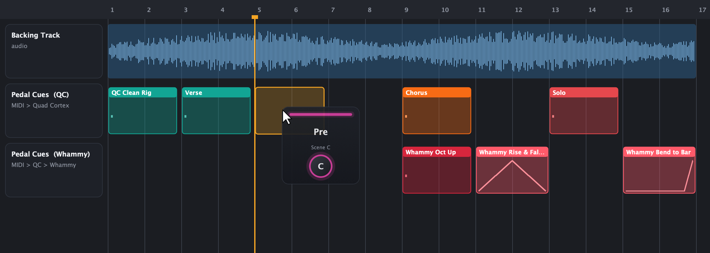
1. Install
You don't need the source code. Download the latest version from the PedalCues website or the Releases page.
| System | Download | Put it here |
|---|---|---|
| Windows (10 / 11, 64-bit) | PedalCues-Windows-Setup.exe (installer) | Run it: the VST3 goes to C:\Program Files\Common Files\VST3\, the app to Program Files |
| macOS (Apple Silicon: macOS 11+; Intel: 10.13 High Sierra+) | PedalCues-macOS.pkg (installer) | Open it and click Install: the app goes to Applications, the plugins to /Library/Audio/Plug-Ins/ |
| Linux (x86-64) | PedalCues-Linux.zip | Unzip and run ./install.sh: the VST3 to ~/.vst3/, the LV2 to ~/.lv2/, the app to ~/.local/bin/ |
On Windows, double-click PedalCues-Windows-Setup.exe:
- PedalCues isn't code-signed, so the first time Windows says "Windows protected your PC". Click More info, then Run anyway.
- Quit your DAW first (a DAW that has PedalCues loaded keeps using the old version until it restarts). Click through the installer; Choose lets you leave out the plugin or the app. If PedalCues or your DAW is still open, the installer asks to close it.
- Done: the VST3 is in
C:\Program Files\Common Files\VST3\, the app in Program Files\PedalCues (Start menu: PedalCues). Uninstall it from Settings > Apps like any other program.
To update, run the newer installer: it replaces the old version. Your projects and settings are kept.
Installed from the zip before (v0.8.2 or older)? The installer puts the plugin in the same folder, so it replaces it. If you kept
PedalCues.exesomewhere else (Downloads, Desktop), delete that old copy and use the one in the Start menu.
Windows without the installer (zip)
PedalCues-Windows.zip has the same files: copy PedalCues.vst3 to C:\Program Files\Common Files\VST3\ and run PedalCues.exe from anywhere. To update, quit your DAW and copy the new files over the old ones.
On macOS, double-click PedalCues-macOS.pkg:
- PedalCues isn't notarised by Apple, so macOS first says it can't verify the installer. Click Done, open System Settings > Privacy & Security, scroll down and click Open Anyway next to the PedalCues message (within a few minutes), then confirm.
- Quit your DAW first (plugins it has loaded keep running the old version until it restarts). Click Continue and Install, and enter your Mac password when asked (the plugin folders are shared by all users). If the PedalCues app is open, the installer asks you to quit it.
- Done:
PedalCues.appis in Applications, the VST3 in/Library/Audio/Plug-Ins/VST3/and the AU in/Library/Audio/Plug-Ins/Components/. Customize lets you leave out any of the three.
To update, open the newer installer the same way; it replaces the old version.
Installed from the zip before (v0.4.26 or older)? Delete the old copies in your user folder, so your DAW doesn't list PedalCues twice:
~/Library/Audio/Plug-Ins/VST3/PedalCues.vst3and~/Library/Audio/Plug-Ins/Components/PedalCues.component(in Finder, Cmd+Shift+G opens a path).If macOS still says "PedalCues is damaged and can't be opened", it isn't damaged; macOS is blocking an app from the internet. Open Terminal and run
xattr -cr /Applications/PedalCues.app.
macOS without the installer (zip)
PedalCues-macOS.zip has the same files to copy by hand. Clear the download flag once, right after unzipping, or macOS says the app "is damaged": open Terminal and run
xattr -cr ~/Downloads/PedalCues-macOS(If you unzipped somewhere else, type xattr -cr and drag the unzipped folder into the Terminal window, then press Return.) Then drag PedalCues.app to Applications, PedalCues.vst3 to ~/Library/Audio/Plug-Ins/VST3/ and PedalCues.component to ~/Library/Audio/Plug-Ins/Components/.
On Linux (built for Ubuntu 22.04 and newer, Debian 12, Fedora and similar; not tested on every distro yet):
unzip PedalCues-Linux.zip && cd PedalCues-Linux
./install.sh # VST3 to ~/.vst3, LV2 to ~/.lv2, the app to ~/.local/bin (and your applications menu)To update, quit your DAW and run ./install.sh from the newer zip: it replaces the old version and keeps your projects and settings. ./install.sh --uninstall removes PedalCues. Prefer doing it by hand? Copy PedalCues.vst3 to ~/.vst3/ and PedalCues.lv2 to ~/.lv2/, and run ./PedalCues from anywhere.
For Sync from QC over USB, Linux needs a one-time permission rule (MIDI cues work without it):
echo 'KERNEL=="hidraw*", ATTRS{idVendor}=="152a", TAG+="uaccess"' | sudo tee /etc/udev/rules.d/70-quad-cortex.rules && sudo udevadm control --reload-rules && sudo udevadm triggerThen unplug and replug the QC's USB cable. If you try PedalCues on Linux, please tell us how it went.
Finally, let your DAW find the plugin. In Reaper, go to Options > Preferences > Plug-ins > VST and click Re-scan; other DAWs have a similar re-scan in their plugin settings. PedalCues appears under Instruments.
There's also a Standalone app (
PedalCues.exe/PedalCues.app/PedalCueson Linux) for testing tiles against the pedal without a DAW. It only needs a MIDI port: pick it in How to connect (at the top of each page, or Help > How to Connect) or in the app's Options > MIDI Output menu, then press Test at the top of a page (or Test all) to check your devices. No audio device is needed. After that, click any tile's round play button and the pedal changes. For treadle moves, set your song's tempo by clicking the BPM pill ("set tempo"), and play your guitar while you test so you hear the bend.
2. Connect your rig
PedalCues sends MIDI from your DAW's tracks to your devices: one cue track per device, each set to the MIDI output its device is on. Your first device is the one on the first tab (a Quad Cortex, a Kemper or a custom MIDI device); the second, if you have one, is the Whammy in our examples, but it can be any MIDI device. Three setups work. Help > Wiring Guide in the app shows the cables for each, with your unit as the example.


| Setup | Connections | Track outputs |
|---|---|---|
| ✅ One device | Device USB → computer, or interface MIDI Out → device MIDI In | One track: the device (USB) or the interface MIDI Out |
| ✅ Daisy chain (what we use) | Interface MIDI Out → first device's MIDI In → its MIDI Thru → second device's MIDI In | Both tracks: the interface MIDI Out (the same one) |
| ✅ Separate outputs | First device on USB or MIDI Out 1, second device on MIDI Out 2 | Each track: the output its device is on |
| ❌ First device on USB, second on its Thru | First device USB → computer, its MIDI Thru → second device | Doesn't work (see below) |
A MIDI Thru only passes on MIDI that arrives at the 5-pin MIDI In. MIDI sent to a device over USB is not forwarded to its Thru, so a second device on that Thru never changes. This is confirmed for the Quad Cortex and the Kemper (Kemper: "USB MIDI has no MIDI Thru") and true for most devices. The Whammy V / DT only has a 5-pin MIDI In, so it always needs a MIDI cable from an interface or another device's Thru. The Kemper Player connects over USB, so give a second device its own output.
QC Mini: pick Quad Cortex Mini in the device list. Its MIDI In and MIDI Out / Thru are small 3.5 mm TRS jacks (Type A): use a TRS MIDI cable, or a 5-pin to TRS adapter. Its manual doesn't say whether USB MIDI reaches its Thru, so for a daisy chain send to its TRS MIDI In. See Quad Cortex Mini.
Device settings
- Quad Cortex: Settings > MIDI Settings. Set a fixed MIDI Channel (default 1, not Omni). For the daisy chain, turn MIDI Thru on.
- QC Mini: Settings > Device > MIDI: the same MIDI Channel and MIDI Thru settings.
- Kemper: in the Kemper's System Settings, set the MIDI channel to a fixed number (it's Omni out of the box). For the daisy chain, use its MIDI Thru (on models where one jack is MIDI Out and Thru, set it to Thru; see the Kemper manual).
- Whammy V or Whammy DT: set its MIDI channel (PedalCues suggests 2) as described in the pedal's manual.
- A custom MIDI device, DL4 MkII, HX One...: set its MIDI channel as its manual describes.
- Give the two devices different channels, and set the same number at the top of each device's page in PedalCues (its MIDI channel box). That way both can share one cable without reacting to each other's cues. Every device keeps its own channel: switching to another device shows that one's.
- Do this before you build songs. Every clip keeps the channel it was dragged with, so changing the channel later doesn't change clips already on the timeline (drag them in again). An amp modeller left on Omni also hears the Whammy's cues: in a daisy chain, a Whammy mode change would load another preset or slot.
Until you confirm the channels, the strip at the top of each page says so in amber, with a Done button. Set the channel, then click Done (it's remembered on this computer).
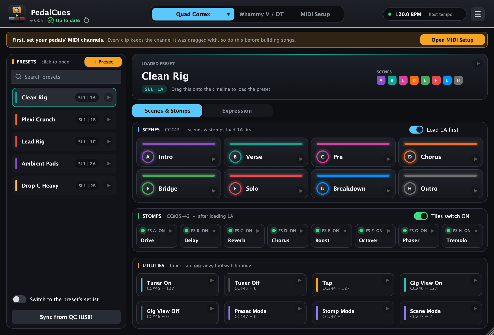
3. Set up your DAW (once)
The clips PedalCues makes are plain MIDI files, so it works in any DAW that can drag in a MIDI file and send a MIDI track to a hardware MIDI output. The steps below use Reaper (tested); the same idea works elsewhere:
| DAW | Where the track's MIDI output is | Status |
|---|---|---|
| Reaper | I/O > MIDI Hardware Output (enable the port in Preferences > MIDI Devices) | Tested |
| Ableton Live | the track's MIDI To | Should work, not tested yet |
| Cubase / Nuendo | the track's MIDI output | Should work, not tested yet |
| Bitwig, Studio One | the track's MIDI / hardware output | Should work, not tested yet |
| Logic Pro | put the clips on an External MIDI track | Clips work; Logic doesn't pass a plugin's MIDI out to hardware, so test with the standalone app |
| Pro Tools | – | Not supported (needs AAX) |
In Reaper:
- Options > Preferences > Audio > MIDI Devices: enable every MIDI output you use (your interface's MIDI Out, and any device on USB).
- Create one track per device, for example QC Cues (or Kemper Cues, or one named after your custom device) and Whammy Cues, and insert PedalCues on each. With one device, one track is enough.
- On each track, click the I/O (routing) button and under MIDI Hardware Output choose its output from the table above. Leave it on Send to original channels: PedalCues already puts each cue on the right pedal's channel.
- Drag QC (or Kemper) tiles onto that track and Whammy tiles onto the Whammy track.
- Turn snap to grid on so clips land exactly on bars. Optional: save the track(s) as a track template so every new song starts with them.
Check it works: click the round play button on a scene tile, and the QC should switch scene (on the Kemper page, a slot tile). Click one on a Whammy mode, and the Whammy's mode LED should move.
With the daisy chain, a single track would also work, since both pedals share one cable and their channels keep the cues apart. Two tracks keep the arrangement easier to read and let you mute one pedal.
How to connect (at the top of each page, or in the ☰ menu) shows the same steps for your devices:

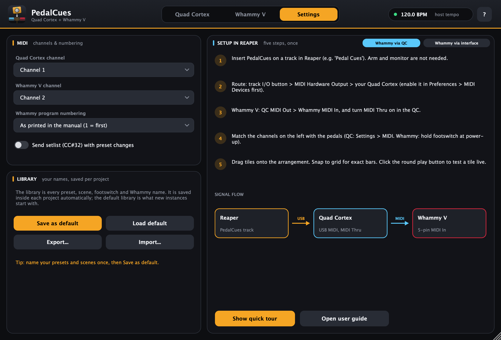

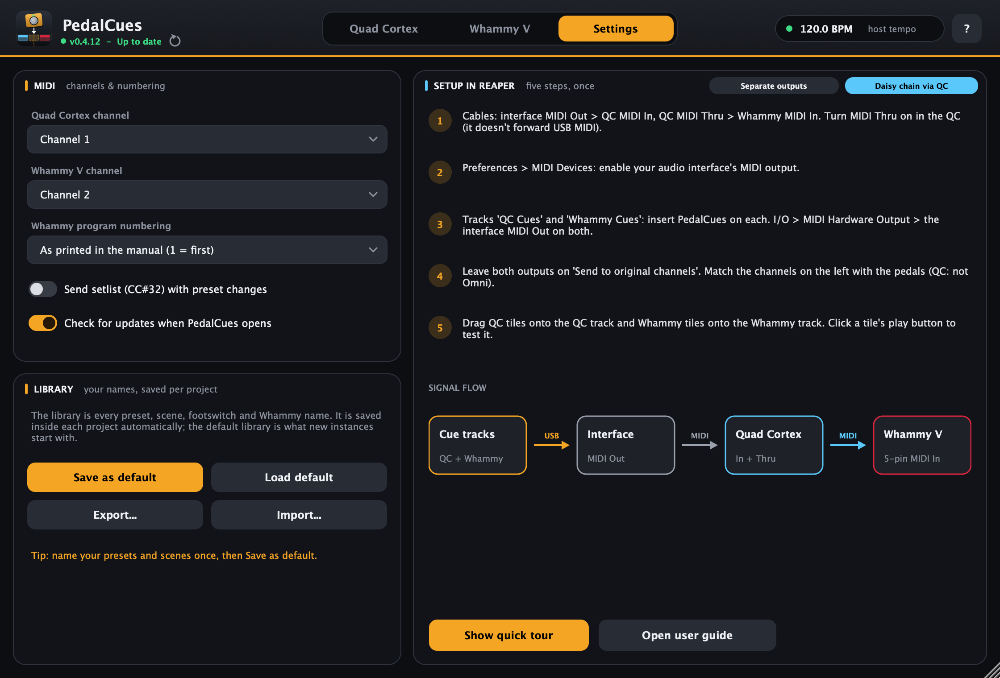
4. First launch: the quick tour
The first time you open PedalCues, a quick tour walks you through every area. It dims the window, highlights one part at a time, and explains it.
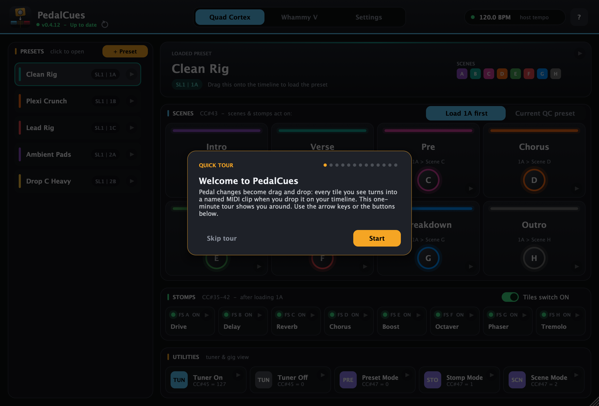
- Move through it with Next / Back or the arrow keys. Esc or Skip tour closes it.
- Open it again any time from the ☰ menu in the top-right corner (the Help menu in the standalone app).
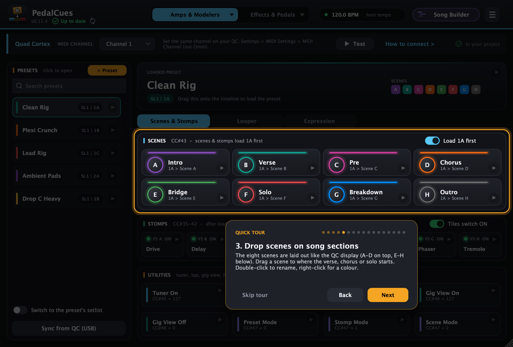
An early step, Choose your device, shows where to pick what you play through (the ▾ on the first tab), and one explains the Load 1A first switch:
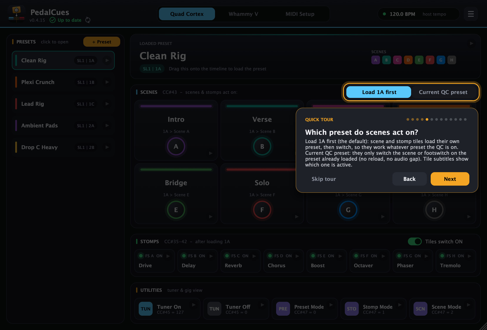
5. Quad Cortex page
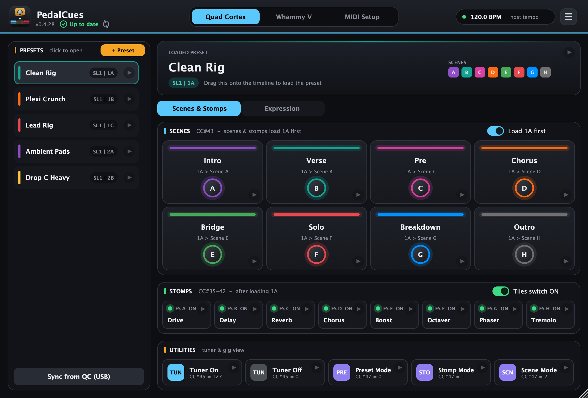
The first tab is named after your amp modeller. Click the ▾ on it (or the tab itself again) to open the device list: Quad Cortex, Quad Cortex Mini, Kemper Profiler, Kemper Player, Fractal, Line 6, HeadRush, Darkglass units and the Nano Cortex, templates such as the Boss GT-1000, and your own MIDI devices, in that order. Type to search it. With a Kemper, the tab turns green and shows the Kemper page instead. Your QC presets stay in the project, so you can switch back any time.
Presets vs scenes: a preset is a whole rig on the QC (often one per song), such as Clean Rig or Drop C Heavy. Scenes are the parts of the song inside that preset, such as Intro, Verse and Chorus. Load the preset once where the song starts, then switch scenes as the song moves on.
| Area | What it does | MIDI sent |
|---|---|---|
| Presets (left) | Your QC presets. Click one to open it; drag it to load that preset. Search presets at the top finds one fast (see below). | CC#0 bank page, optional CC#32 setlist, then Program Change |
| Switch to the preset's setlist (under the preset list) | Each preset tile also sends its setlist (CC#32), so the QC switches to that setlist even when it's on another one. Turn it on if your presets are in more than one setlist; leave it off if you keep the QC in one setlist. Hover it for the details. | CC#32 before the Program Change |
| Setlists not sent: turn on (above Sync from QC) | Appears when your presets are in more than one setlist but Switch to the preset's setlist is off. Click it to turn it on, so each preset loads in its own setlist; then drag preset clips you made before into your DAW again. | Turns on CC#32 |
| Loaded preset screen | The opened preset, with its location and scene colours. Drag it like a preset. | Same as above |
| Scenes | 8 scenes laid out like the QC display: A-D top, E-H bottom. | CC#43 = 0-7 |
| Load 1A first (Scenes header) | Picks which preset scene and stomp tiles act on. See below. | Preset + CC#43 / CC#35-42, or the CC alone |
| Stomps | Switch one footswitch A-H. The header switch picks whether tiles send ON or OFF. | CC#35-42 |
| Scenes & Stomps / Looper / Expression | The switch under the screen picks what the lower part shows: scene and stomp tiles, the Looper X tiles, or expression moves. | |
| Expression | Moves whatever you assign to Expression 1 or 2 on the QC: swells, fades, wah, or your own drawing. | CC#1 / CC#2 |
| Utilities | Tuner on/off, Tap (one Tap Tempo press: drop one on each beat), Gig View on/off (opens or closes the QC's big-text Gig View screen), and the footswitch mode (Preset / Stomp / Scene). | CC#45, CC#44, CC#46, CC#47 |
Search your presets
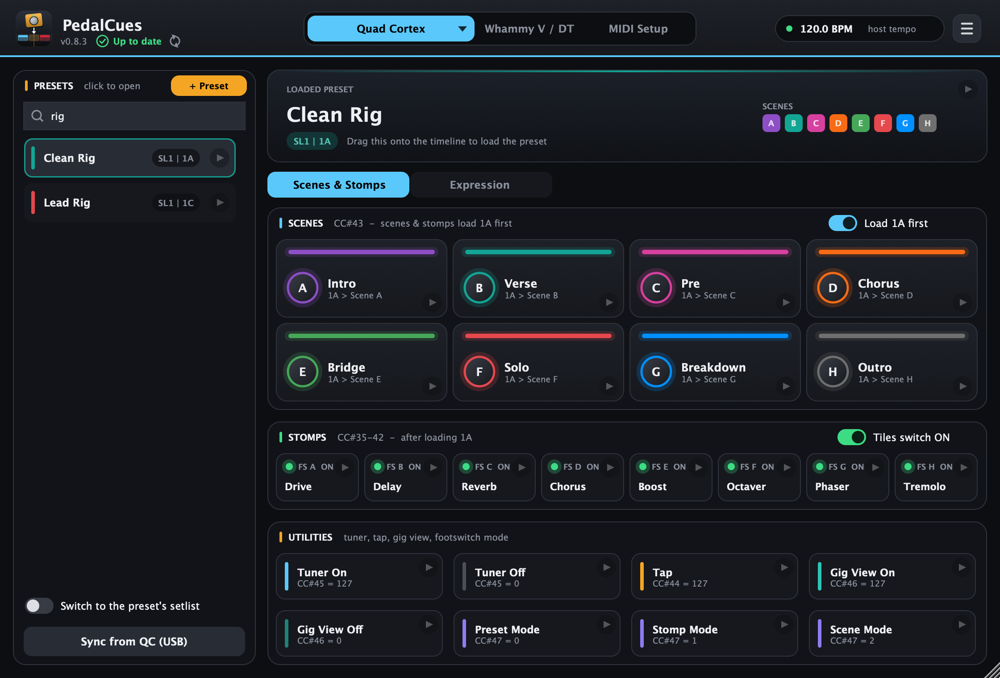
With a long list, type in Search presets above it. The search is forgiving: letters in order find a name (drpc finds Drop C Heavy), one typo is fine (hevy), and several words must all match (lead rig). You can also type a location as the QC shows it, like SL2 or 3B. The best matches come first. Return opens the first one, Esc clears the search. The Kemper's performance list and custom MIDI devices have the same search.
Every tile:
- Drag it onto the timeline to create a named MIDI clip, for example
QC Scene D - Chorus. - Click the round play button to send it to the pedal immediately.
- Double-click to rename it. Right-click for colour, reorder, duplicate, delete, or Send to pedal now.
Which preset do scenes and stomps act on?
The Load 1A first switch at the top right of the Scenes header decides this for both scene and stomp tiles (it names the preset you have open). The header hint says which way it's set.
- On (the default). A scene or stomp tile first loads its own preset, then switches the scene or footswitch 1/16 later. It works whatever preset the QC is on. Scene tiles read
1A > Scene Band the Stomps header says after loading 1A. - Off: the current QC preset. A tile sends only the scene or footswitch change, and the QC applies it to the preset it already has loaded. There's no preset reload, so no audio gap. Use this for scene changes inside a song, after a preset clip. Scene tiles read
Scene B - current preset.
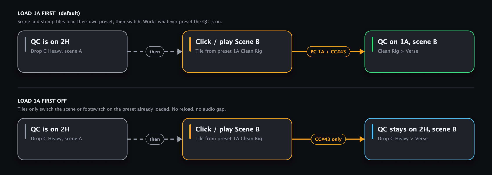
The clip names show the difference on the timeline too: QC Clean Rig > B - Verse loads the preset first, while QC Scene B - Verse switches only the scene.
Timing: scenes right after a preset
With Load 1A first, the scene (or footswitch) comes 1/16 after the preset change, so the QC has time to load the preset. It lands a sixteenth after the bar you dropped it on. Two ways to have it exactly on the beat:
- Drop the tile 1/16 early. Set your DAW's grid to 1/16 and drop the tile one step before the beat: the preset goes out just before, and the scene lands on the beat. The QC still gets its loading time, so this is safe even if a different preset is loaded.
- Inside a song, switch Load 1A first off. Once the song's preset is loaded (by a preset clip, or the first Load 1A first scene), scene tiles with Load 1A first off send only the scene change, exactly on the beat, with no reload.
The same 1/16 applies to Expression clips with Load 1A first.
Projects saved with PedalCues 0.4.2 or older keep their old choice. If Load 1A first is off in yours and you want the new behaviour, switch it on once.
Sync your presets from the Quad Cortex (USB)
Instead of typing every preset, let PedalCues read them from the pedal:
- Connect the QC's USB port to the computer and switch the QC on. Name sync only works over USB, but your cues can still go over any cable (5-pin MIDI, the daisy chain, or USB).
- Quit Cortex Control: it keeps the USB connection to itself.
- Click Sync from QC (USB) under the preset list.
- PedalCues lists your setlists with their preset counts. Tick the ones to import and check each one's setlist number: the QC doesn't report its setlist numbers over USB, so PedalCues guesses new ones (My Presets first, then A-Z). Set each to the number it has on your QC; the Factory Presets are 0 and your own setlists start at 1. PedalCues remembers the numbers you set, so the next sync gets them right. The Factory Library is unticked by default.
- Leave Send the setlist with every preset change on (it's on by default here; it's the same switch as Switch to the preset's setlist under the preset list). It sends the setlist number (CC#32) before each preset, so the QC switches to the right setlist even when it's on another one. Preset clips you dragged into your DAW before turning it on don't have it: drag them in again.
- Optional: tick Also read scenes, colours and stomps for every ticked preset (see below).
- Click Import. New presets are added at their bank and slot; presets you already have at the same setlist, bank and slot are renamed. Tick Replace my current preset list to start fresh instead.
What it reads:
- Always: setlist names, every preset's name, bank and slot, and the scene names, scene colours and stomp (footswitch) names of the preset that's loaded on the QC. This only reads: nothing on the QC changes.
- With "every ticked preset" on: the scene names, colours and stomp names of every preset you import. To read a preset the QC has to load it, so PedalCues loads each one in turn (the audio cuts each time, a few seconds per preset), then goes back to the preset and scene you were on. Do this at home, not on stage. It won't start if the loaded preset has unsaved changes (loading another preset would throw them away), and the QC's Recents list may change. It never saves, creates, deletes or edits anything.
Scenes the QC leaves unlabelled keep the name they had in PedalCues. Scene colours come straight from the QC, so the tiles match the pedal.
This uses the QC's private USB connection (the one Cortex Control uses), which Neural DSP doesn't document. It follows the community's reverse-engineering in pyquadcortex. Tested on a Quad Cortex; a CorOS update could break syncing until PedalCues is updated, but your MIDI cues keep working regardless. On the QC Mini it should work but isn't tested yet.
Looper X
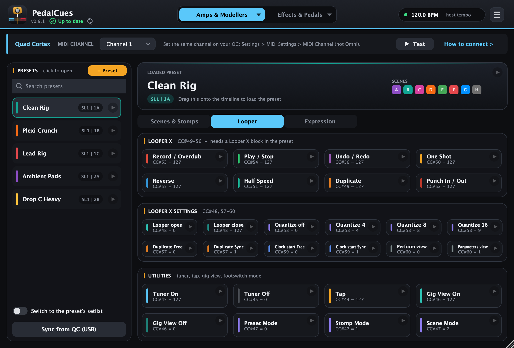
Click Looper under the screen for the Quad Cortex's Looper X (from the Quad Cortex and QC Mini manuals, CorOS 4.1.1). It only works when the loaded preset has a Looper X block on the grid.
- Looper X: Record / Overdub (CC#53), Play / Stop (CC#54), Undo / Redo (CC#56), One Shot (CC#50), Reverse (CC#55), Half Speed (CC#51), Duplicate (CC#49) and Punch In / Out (CC#52). Each clip works like pressing the button: drop Record / Overdub where recording starts and again where it should overdub, Play / Stop where it plays or stops.
- Looper X settings: open or close the Looper X screen (CC#48), Quantize off / 4 / 8 / 16 beats (CC#58), Duplicate Free or Sync (CC#57), MIDI Clock Start Free or Sync (CC#59), and the Perform or Parameters view (CC#60).
- The Utilities (tuner, tap, Gig View, footswitch mode) stay below, as on the other views.
The Looper view works on the QC Mini too. Not tested on a Quad Cortex yet: if a tile doesn't do what it says, please tell us.
Expression: swells, fades and wah
Click Expression under the preset screen. Its tiles move whatever you assign to an expression pedal on the Quad Cortex: a volume block for swells, a wah, a delay or reverb mix, drive, a filter. PedalCues sends CC#1 (Expression 1) or CC#2 (Expression 2), which is what the QC listens to for its expression pedals, so you don't need a physical pedal plugged in.

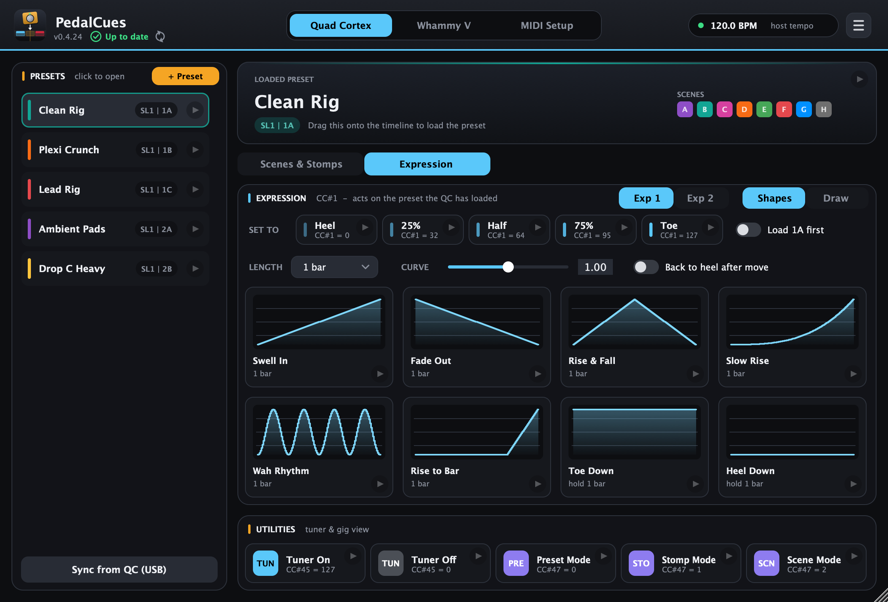

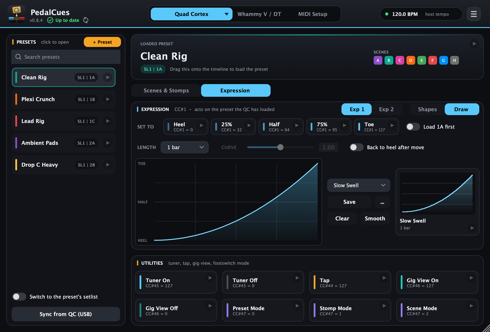
On the Quad Cortex (once per preset): assign the parameter you want to move to Expression 1 (or 2), the same way you would for a real expression pedal, and set its range: heel is the lowest setting, toe the highest. Save the preset; the assignment is stored in it.
In PedalCues:
- Exp 1 / Exp 2 (header) picks which expression pedal the tiles move.
- Set to tiles put it at a fixed spot: Heel, 25%, Half, 75% or Toe. Drop one at the start of a song or right after a preset loads, so you always start from a known position.
- Moves, with a Length (1/16 to 4 bars) and a Curve, written in beats so they follow the project tempo:
| Move | What it does | Good for |
|---|---|---|
| Swell In | Heel to toe over the length | Volume swells, opening a filter |
| Fade Out | Toe to heel | Fading the end of a song, closing a delay |
| Rise & Fall | Heel to toe and back | A swell that dies away |
| Slow Rise | Barely moves at first, then rises quickly | Build-ups into a chorus |
| Wah Rhythm | Heel to toe and back on every beat | Rhythmic wah |
| Rise to Bar | Holds heel, then rises during the last beat | Opening up exactly on the downbeat |
| Toe Down / Heel Down | Jump there and hold |
- Draw sketches your own move, the same way as the Whammy's drawn moves, and you can save it in My drawings, shared with the Whammy.
- Back to heel after move (off by default) puts the pedal back to heel when the move ends. Leave it off for a swell that should stay up.
Which preset do they act on? By default, the one the QC has loaded at that moment, like the Utilities: expression clips don't load a preset, and what a move does depends on that preset's own assignment (the same Swell In can swell the volume in one preset and open a wah in another). So place expression clips after the preset clip they belong to.
Switch on Load 1A first (right of the Set to tiles; it names the preset you have open, like the one in the Scenes header) to make every expression clip load that preset first and start its move 1/16 later, like scene tiles do. The clips are then named like QC Clean Rig > Exp 1 Swell In 1 bar. It's off by default because the QC may cut the sound for a moment when it reloads a preset.
If a preset might get changed by accident on stage (a stray foot on the QC): keep scenes and stomps on Load 1A first (the default), so the next scene cue puts the right preset back. For an important expression move, either switch on Load 1A first in Expression, or drop a scene clip just before the move and a Set to tile (for example Heel) right after it. Listen for a short gap when the preset is re-sent; if your QC has a MIDI setting to ignore a repeated Program Change, turning it on avoids reloading a preset that's already loaded.
Expression clips go on the QC Cues track, like your other QC cues, and are named like QC Exp 1 Swell In 1 bar.
Example: volume swells. In a preset, add a Volume block after your drives (before delay and reverb, so the tails ring on) and assign its level to Expression 1 with the range from silent to full. In PedalCues, set Length to 2 beats and drop Heel at the start of the passage, Swell In where you strike each chord, and Heel again just before the next chord. Play each chord while the volume is still at heel, and it fades in in time with the song.
Don't let two expression clips on the same pedal overlap: both would send values and the setting would jump between them. If you also have a real expression pedal plugged in, the last value wins, so leave it alone while the clips play.
Adding a preset by hand
- Click + Preset.
- Type its name, setlist number, bank (1-32) and slot (A-H), exactly as the QC shows them. For example, Setlist 1, bank 3, slot B is shown as
SL1 | 3B. A factory preset is setlist 0 (shown asFactory | 3B). - Click the preset in the list, then double-click each scene to give it the same name as on your QC.
- Right-click a scene to give it the same colour you use on the pedal.
Quad Cortex Mini
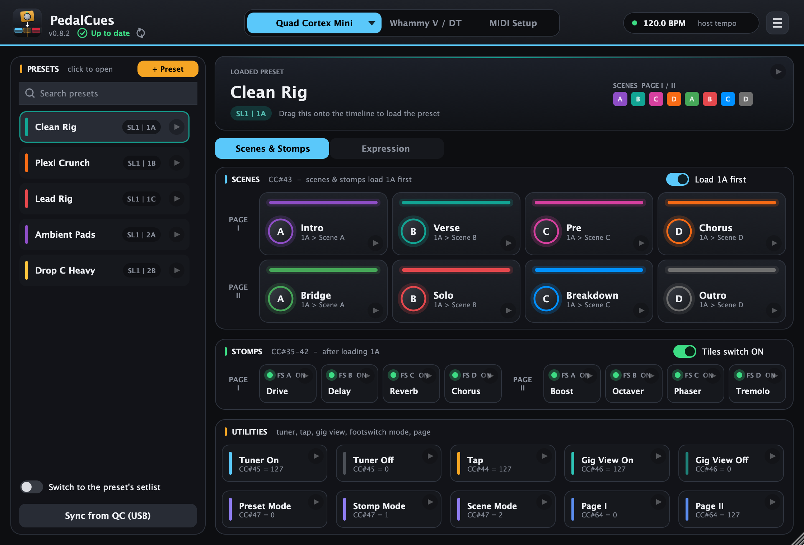
The QC Mini has four footswitches, A-D, on two footswitch pages. Each preset still has 8 scenes and 8 stomp assignments: Page II holds what the Quad Cortex has on E-H, so presets and MIDI are the same on both. Pick Quad Cortex Mini in the device list and the page shows them by page:
| Area | On the Mini | MIDI sent |
|---|---|---|
| Scenes | Two rows, labelled Page I and Page II, each with scenes A-D. A scene tile switches to its scene whatever page the Mini is showing. Clip names say the page, e.g. QC Scene B (II). | CC#43 = 0-3 (Page I), 4-7 (Page II) |
| Stomps | Footswitches A-D of Page I, then A-D of Page II. | CC#35-38 (Page I), CC#39-42 (Page II) |
| Page I / Page II (Utilities) | Shows that footswitch page on the Mini, like holding B. | CC#64 = 0 / 127 |
Everything else (presets, setlists, Load 1A first, Looper, Expression, tuner, tap, Gig View, footswitch mode, Sync from QC) works as on the Quad Cortex. The Mini has one EXP jack; Expression 2 works over MIDI only. The numbers come from Neural DSP's QC Mini manual, which lists the same MIDI as the Quad Cortex's.
6. Kemper page
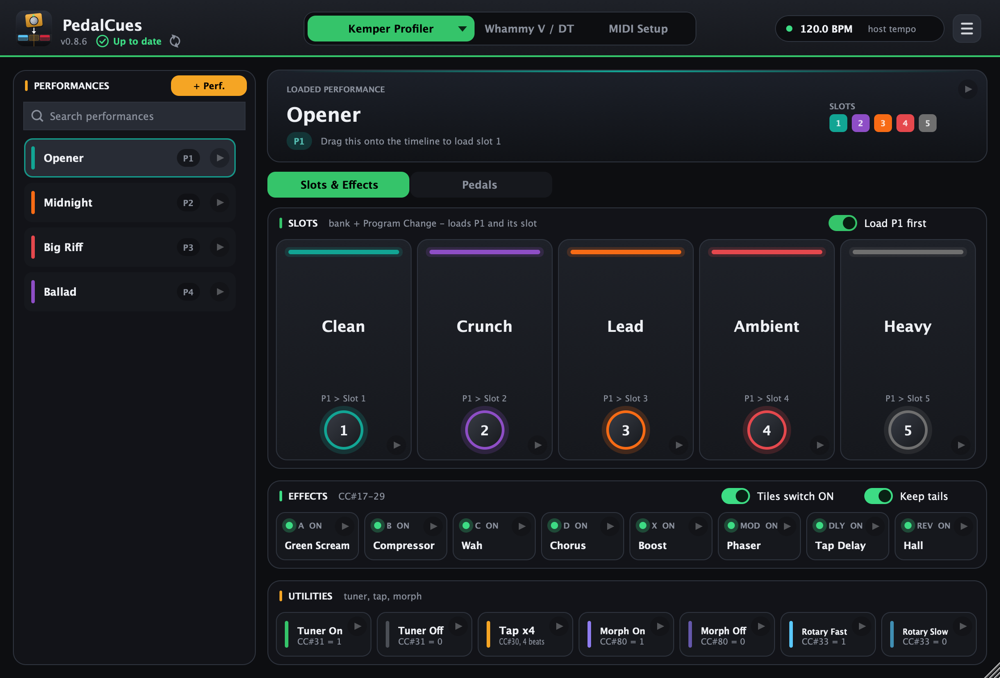
Pick Kemper Profiler (Head, Rack, Stage, Player... every Profiler model, in Performance mode) or Kemper Player with the ▾ on the first tab. The page works like the Quad Cortex page: a list on the left, a screen for the one you opened, and tiles below.
Performances and slots: a performance on the Kemper holds up to five slots (rigs), often one performance per song with a slot for each part, such as Intro, Verse, Chorus. On the Kemper Player the list is called Banks (10 banks of 5 slots, its 50 slots).
| Area | What it does | MIDI sent |
|---|---|---|
| Performances (left) | Your performances, with the number they have on the Kemper (1-125). Search performances at the top finds one fast. + Perf. adds one; double-click to edit, right-click to recolour, reorder or delete. | |
| Loaded performance screen | The opened performance and its slot names. Drag it to load slot 1. | Bank select CC#32, then Program Change |
| Slots | Slots 1-5 of the open performance. Double-click to rename, right-click for a colour. | See below |
| Load P1 first (Slots header) | On (the default): a slot tile loads its performance and slot from anywhere. Off: it loads that slot of the performance the Kemper already has loaded. | On: CC#32 + Program Change. Off: CC#50-54 |
| Effects | Switch an effect module on or off: A, B, C, D, X, MOD, DLY, REV. Tiles switch ON / OFF picks which. Keep tails lets the delay and reverb ring out when they're switched off. | CC#17-20, 22, 24, 26/27, 28/29 (value 1 = on, 0 = off) |
| Utilities | Tuner On / Off, Tap x4 (four taps, one per beat, so tempo-synced delays follow the song), Morph On / Off, Rotary Fast / Slow. | CC#31, CC#30, CC#80, CC#33 |
| Slots & Effects / Pedals | The switch under the screen picks what the lower part shows: slot and effect tiles, or pedal moves. |
Clips are named like Kemper Opener > 2 - Verse (performance and slot) or Kemper Slot 2 - Verse (slot of the current performance).
Program numbers: in Performance mode, the Kemper counts its slots from Performance 1 Slot 1 upwards, 128 to a bank: PedalCues sends the bank (CC#32, 0-4) and the Program Change for you, so you only type the performance number. On the Kemper Player, the 50 slots are Program Changes 1-50.
Pedals: wah, pitch, volume and morph
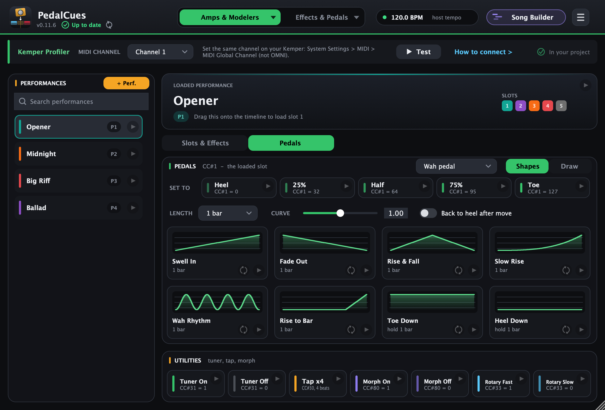
Click Pedals under the screen. The tiles move one of the Kemper's pedal inputs over MIDI, so you don't need a real pedal plugged in. Pick which in the header: Wah (CC#1), Pitch (CC#4), Volume (CC#7) or Morph (CC#11). The pedal moves whatever the rig on the Kemper assigns to it, like a real pedal would.
It works like the Quad Cortex's Expression: Set to tiles (Heel, 25%, Half, 75%, Toe), ready-made moves (Swell In, Fade Out, Rise & Fall, Slow Rise, Wah Rhythm, Rise to Bar, Toe Down, Heel Down) with a Length and Curve, Draw your own with My drawings, and Back to heel after move. Pedal clips act on the slot the Kemper has loaded, so place them after the slot clip they belong to.
Names and setup
Type the performance and slot names in PedalCues, as they're shown on the Kemper. Unlike the Quad Cortex, the Kemper can't send its performance names and colours to another program, so there's no sync. The Kemper's MIDI channel is at the top of its page: set the Kemper to the same fixed channel (it's Omni out of the box).
Tested against Kemper's MIDI documentation, not on a real Kemper yet. If something doesn't switch as expected, please tell us.
7. Fractal, Line 6, HeadRush, Darkglass and more (beta)

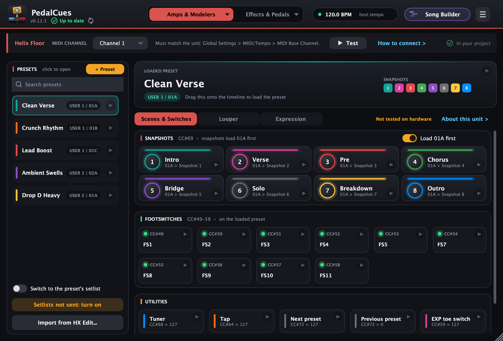

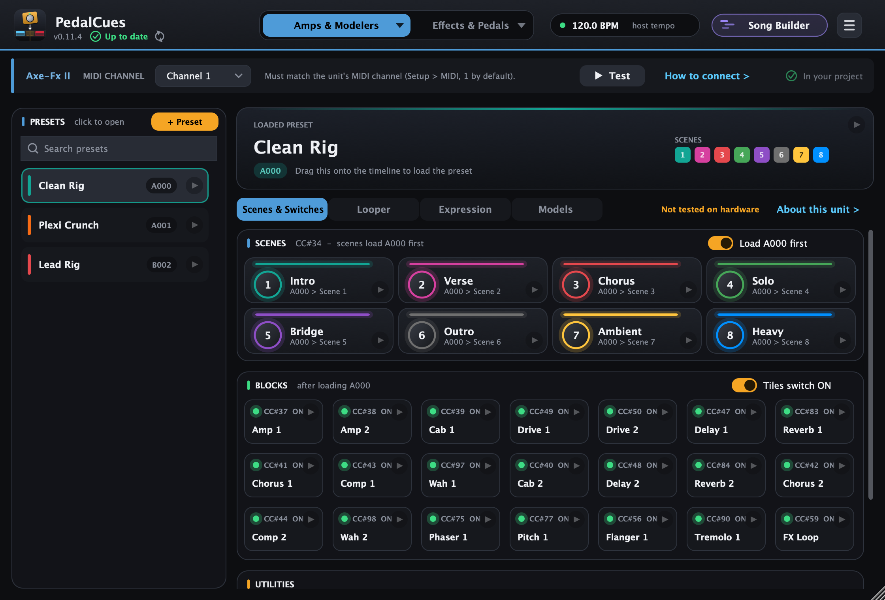
These units have their MIDI numbers defined, by Line 6, HeadRush, Darkglass and Neural DSP or as Fractal's factory defaults, so each gets a page like the Quad Cortex: your presets in a list, scenes or snapshots named per preset, and the unit's own footswitches or blocks, utilities, looper and expression. Pick yours from the device list (the ▾ on the first tab; type to search).
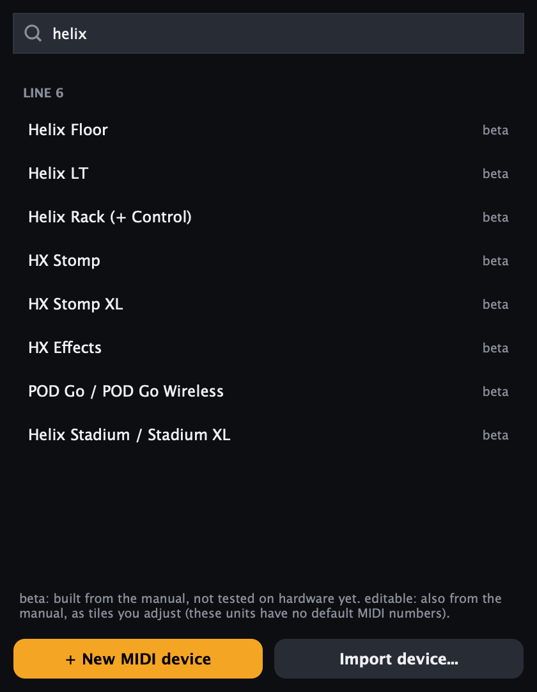
| Line 6 | Fractal Audio | HeadRush | Darkglass | Neural DSP |
|---|---|---|---|---|
| Helix Floor, Helix LT, Helix Rack (+ Control), HX Stomp, HX Stomp XL, HX Effects, POD Go / POD Go Wireless, Helix Stadium / Stadium XL | Axe-Fx II / XL / XL+, AX8, FX8 (Mark I / II) | Core, Prime, Flex Prime, Pedalboard, Gigboard, MX5 (details) | Anagram (details), Infinity 500 Combo, Exponent 500 (details) | Nano Cortex (details) |
The Axe-Fx III, FM9, FM3 and VP4 have no default MIDI numbers, so they come as templates instead.
Built from the manuals, not tested on hardware. Every number on these pages comes from the manufacturer's manual (Line 6 firmware 3.80, POD Go 2.50 and Stadium manuals; Fractal owner's manuals). The page says so next to the view switch, and About this unit gives the manual, what to check and the unit's connection facts. Please tell us what works on your unit.
Presets: click + Preset and enter it the way your unit shows it: Helix USER 1 > 01A, HX Stomp 01A-42C, Axe-Fx II bank A-F + 000-127, AX8 01:1, FX8 A1. Search presets finds one fast. On units with setlists (Helix, POD Go, Stadium), Switch to the preset's setlist (under the list) makes each preset also select its setlist (CC#32). It's off by default, like the Quad Cortex's, and a Setlists not sent: turn on button appears when your presets are in more than one setlist.
Scenes / snapshots: named per preset, like the QC's scenes. With Load (preset) first on (the default), a tile loads its preset first:
- Line 6: the snapshot goes out with the preset. Line 6 documents that a snapshot sent during a preset load waits until the preset has loaded.
- Fractal: the scene follows 1/16 later, like on the QC.
The views:
| View | Line 6 | Fractal (Axe-Fx II, AX8, FX8) |
|---|---|---|
| Scenes & Switches | Snapshots (CC#69); footswitches (Helix CC#49-58 press FS1-FS5 and FS7-FS11: no CC for FS6 or FS12; HX Stomp FS4/FS5 = external switches; Stadium: footswitch mode, CC#37); tuner, tap, next/previous preset, All bypass (HX) | Scenes (CC#34); blocks on/off with Tiles switch ON/OFF (Amp, Cab, Drive, Delay, Reverb...); tuner, tap, next/previous scene |
| Looper | Record/overdub, play/stop, play once, undo, direction, speed, looper on/off | Record, play, once, dub, reverse, half speed, undo |
| Expression | EXP 1-2 (EXP 3 on Helix Floor and Rack): Set to tiles, swells, fades, wah and drawn moves | External controllers (Axe-Fx II and FX8: 1-4 = CC#16-19; AX8: 5-8 = CC#20-23): used by a preset's modifiers |
Good to know:
- The Helix tuner and tap tiles act on any value: each tuner clip toggles the tuner, and one tap tile is one tap (drop it on each beat).
- HX Stomp: the manual says three snapshots per preset (its MIDI table also lists a fourth value); the page uses three.
- POD Go takes MIDI over USB only: no 5-pin MIDI, so no daisy chain.
- Helix Stadium uses a different MIDI map from older Helix units, and a second MIDI channel for block bypass that this page doesn't cover. With MIDI Over USB C on, its MIDI Thru also passes on USB MIDI.
- Fractal pages use the factory default CCs. If you changed them on your unit, use a custom MIDI device instead. On the Axe-Fx II, "Ignore Redundant PC" is off by default, so loading the preset that's already loaded reloads it. MIDI over USB reaches the 5-pin MIDI Out only with USB Adapter Mode on.
Preset names from HX Edit (Helix, HX Stomp, HX Effects)
On a Helix Floor / LT / Rack, HX Stomp, HX Stomp XL or HX Effects page, Import from HX Edit... (under the preset list) reads a file you exported in HX Edit: a setlist (.hls), a bundle (.hlb, all setlists) or a single preset (.hlx). Pick which setlist from the file goes to which setlist on the page; PedalCues fills in the preset names in their slots and each preset's snapshot names and colours (from the snapshot LEDs). Empty "New Preset" slots are skipped unless you untick that. It only reads the file: nothing is sent to your unit, and footswitch names stay as they are.
Read preset names from the unit (beta)
Some units answer a read-only MIDI request with their preset names. Read names from the unit (beta)... asks for them and fills in the list:
- Pages: Strymon TimeLine, BigSky, Mobius and Boss DD-500, RV-500, MD-500 (the button is under the preset list).
- Template devices: Boss GT-1000, Fractal Axe-Fx III, FM9, FM3, VP4: in the device's ... menu (it adds or renames a tile per named preset; on the Axe-Fx III family it can also show the loaded preset's scene names).
Pick the MIDI Out and the MIDI In your unit is on (it has to answer), then Read. PedalCues only sends read requests (Roland RQ1, Fractal's name queries, Strymon's preset request): nothing is loaded, saved or changed on the unit, and you can cancel at any time. Choose Only presets with names (on) and, on pages, whether to replace your list. These reads come from the makers' documents and Strymon's open-source librarian but aren't tested on hardware yet: please tell us if it works with yours. The Kemper, HeadRush, Darkglass, Nano Cortex and most pedals don't report their preset names, so type them in.
HeadRush (beta)
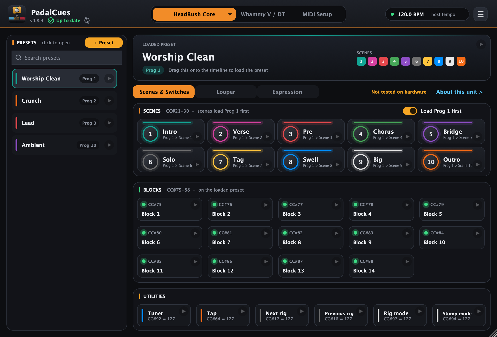
HeadRush publishes one fixed MIDI map, so each unit gets a page. It works a little differently from the others:
- Presets are your rigs' MIDI PROG numbers. HeadRush has no bank select or setlists over MIDI: each rig has a MIDI PROG number that you set in the rig's settings. Set it on the rig, then enter the same number in PedalCues (+ Preset). Core, Prime and Flex Prime show it as 1-128, Pedalboard, Gigboard and MX5 as 0-127; the page uses the numbers your unit shows. Turn Prog Change Recv on in the unit's Global Settings > MIDI.
- Scenes (Core 10, Prime 8, Flex Prime 6): each scene has its own CC, from CC#21. With Load (preset) first on, the scene follows the rig 1/16 later. Pedalboard, Gigboard and MX5 have no scenes over MIDI, so their page shows blocks only.
- Blocks: Block 1-14 (11 on Pedalboard, Gigboard and MX5), CC#75 and up, as numbered in the rig. HeadRush only toggles a block: each clip turns it on if it was off and off if it was on. Rename the tiles after your blocks.
- Utilities and looper: tuner (CC#92, toggles; not on Pedalboard, Gigboard or MX5), tap, next / previous rig, Rig and Stomp footswitch modes; looper record, start/stop, insert, peel, mute, reverse, speed and length.
- Expression: Core CC#1 (external pedal); Prime and Flex Prime CC#1 (built-in) and CC#2 (external).
- Footswitch tiles (Core, Prime, Flex Prime) press and release the footswitch (127, then 0 1/16 later), like your foot: they do whatever that footswitch does in the current mode. The older Pedalboard, Gigboard and MX5 guides don't give the values, so they have no footswitch tiles.
- Connection: use a MIDI cable from your interface. The manuals don't mention MIDI over USB from a computer, so the wiring guide shows MIDI cables only. Flex Prime and MX5 have 3.5 mm TRS MIDI jacks (Type A): use a TRS MIDI cable or a 5-pin to TRS adapter.
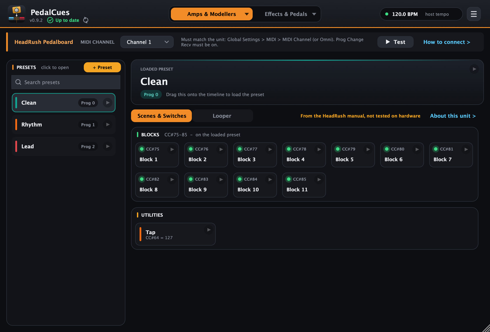
Darkglass Anagram (beta)
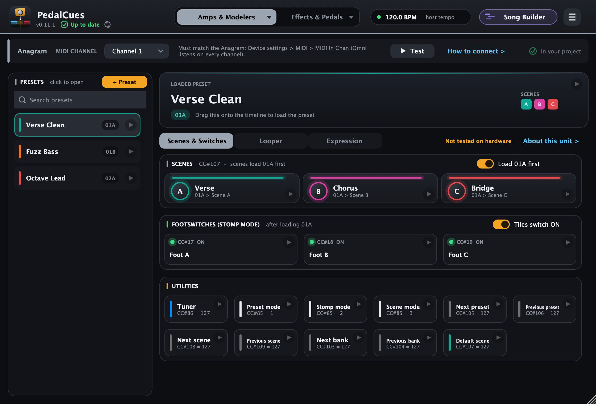
Built from the Anagram manual (KosmOS 1.17, MIDI Support). Darkglass says its MIDI is still being developed, so newer firmware may add more.
- Presets: 01A-42C, loaded with a Program Change. The Anagram ignores value 0, and its MIDI Style numbering (001-126) matches the Program Change, so 01A = Program Change 1. If 01A doesn't load on your unit, please tell us.
- Scenes A-C (three per preset): CC#107 = 1, 2, 3. The manual's table lists values 1-126; PedalCues sends 1-3 for the open preset. Tell us if your Anagram needs something else.
- Footswitches A-C (the Stomp mode bindings): CC#17-19, ON or OFF with the header switch. With the Anagram's Toggle Logic setting on Value (the default), 0-63 = off and 64-127 = on.
- Utilities: tuner (CC#86), Preset / Stomp / Scene mode (CC#85 = 1 / 2 / 3), next / previous preset and scene. Looper: play/stop, rec/dub, undo, redo, next / previous slot and the looper screen (never clear: PedalCues doesn't send it) (CC#110-115).
- Expression: the expression pedal binding (CC#89) and knob bindings 1-6 (CC#20-25). The footswitch, knob and expression numbers are the default binding CCs; if you changed them (Bindings > Edit CCs), use a custom MIDI device.
- Connection: 3.5 mm TRS MIDI In and Out (Type A) and USB MIDI (turn USB MIDI on). Set MIDI In Chan to the channel at the top of its page.
Darkglass Infinity 500 Combo and Exponent 500 (beta)

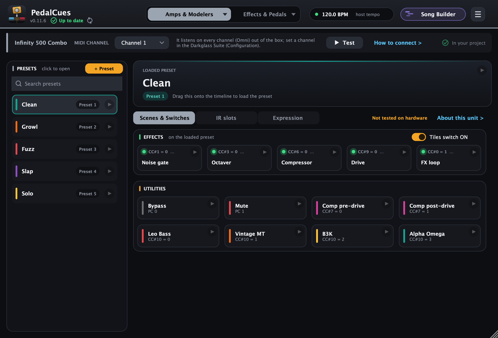

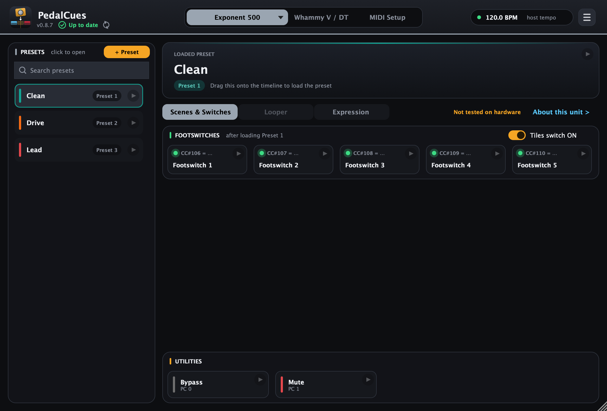
Both amps' manuals publish a default MIDI mapping, so they get pages. If you changed the mapping or the switch type in the Darkglass Suite, use a custom MIDI device instead.
- Presets 1-5 = Program Change 2-6. Bypass (PC 0) and Mute (PC 1) are in Utilities.
- Infinity 500 Combo: Effects switches the noise gate, octaver, compressor, drive and FX loop on or off. Utilities have the compressor position and the four drive modes (Leo Bass, Vintage Microtubes, B3K, Alpha Omega). The second view is IR slots (IR bypass, slots 1-7). The Expression view moves drive amount, tone, blend and level, the compressor, octaver and gate, the tweeter, the six EQ sliders and the preset level.
- Exponent 500: Footswitches 1-5 (CC#106-110) switch the effect bypasses bound to each Darkglass MIDI Footswitch button in the preset. The Expression view moves Quick-Pots A-E (CC#0-4) and the master volume (CC#5).
- Switch values: both use the Per-value switch type by default, so the effects send 0 = on, 1 = off (the tiles show the value), the FX loop 1 = on, 0 = off.
- Connection: the back-panel MIDI In takes a 5-pin cable (the 7-pin connector is only for the Darkglass MIDI Footswitch), or USB MIDI. They listen on every channel (Omni) out of the box. Neither has a MIDI Out, so a second pedal needs its own output.
The Microtubes Infinity pedal has a template from a community chart. The ADAM and Alpha·Omega Photon pedals take MIDI (TRS Type B, USB), but Darkglass publishes no MIDI chart for them, so use a custom MIDI device and its manual or the Darkglass Suite.
Nano Cortex
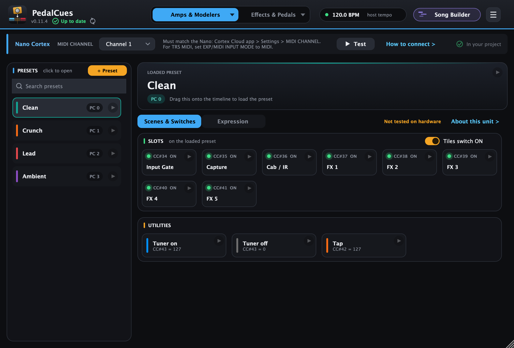
Built from the Nano Cortex User Manual 2.2.0 (Incoming MIDI CC List). Pick Nano Cortex under Neural DSP in the device list.
- Presets: the 64 slots under ALL PRESETS are Program Change 0-63 (the app's PC/CC button shows the numbers). No banks, setlists or scenes over MIDI.
- Slots: Input Gate, Capture, Cab/IR and FX 1-5 on or off (CC#34-41).
- Utilities: tuner on / off (CC#43) and tap (CC#42). Expression: CC#1, with the shapes, Set to tiles, Draw and Wave. There's no looper over MIDI.
- Connection: USB-C MIDI, or TRS MIDI Type A into the EXP/MIDI jack: set EXP/MIDI INPUT MODE to MIDI in the Cortex Cloud app (then the jack can't take a real pedal, which is where the Expression view helps). Set MIDI CHANNEL there to the channel at the top of its page.
- The Nano has no MIDI Out, so it can't pass MIDI on to a second pedal: give a Whammy or other pedal its own MIDI output (the wiring guide shows Separate outputs).
8. Custom MIDI devices (beta)
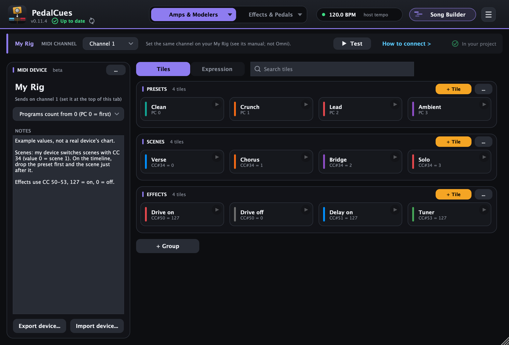
Not on a Quad Cortex, Kemper or one of the Fractal, Line 6 and HeadRush pages? Any device that takes MIDI works, including units where you set up the MIDI mapping yourself:
- Templates give you a head start for units with their own MIDI mapping: the Axe-Fx III, FM9, FM3, VP4, Boss GT-1000 and Darkglass Microtubes Infinity come with tiles from their manuals (or a community chart) and notes on what to set on the unit.
- Anything else (another Boss, a synth, a looper, a lighting controller): make the tiles yourself, once, from the device's MIDI chart.
Either way it's an ordinary MIDI device you can edit, give expression moves and share.
Make one: click the ▾ on the first tab (or click the open tab again) and choose a template (an Axe-Fx III, FM9, FM3, VP4, Boss GT-1000 or Microtubes Infinity) to start from its manual, or click + New MIDI device under the list and give it a name: it starts with example tiles to edit, and the tab takes its name. Import device... next to it adds one from a file.
The device card (left):
- Name: double-click to rename. The ... menu has rename, colour, duplicate, delete and New MIDI device.
- Programs count from 0 / 1: how the device's manual numbers presets. Some count the first preset as 0, others as 1; Program Change tiles use the same counting.
- Notes: anything worth remembering: which manual page the numbers come from, and why it's set up this way. Notes travel with the device when you share it.
- Export device... / Import device...: save the device (groups, tiles, notes and its expression CC) as a
.pedalcues-devicefile, to back it up or share it. One person sets up a device and everyone with the same gear imports it.
Search tiles (above the groups) finds a tile by its name, messages, note or group; groups without a match are hidden while you search.
Groups and tiles (right): name groups however your device works, for example Presets, Scenes, Snapshots or Switches. + Group adds one, + Tile adds a tile to a group, and each group's ... renames, moves or deletes it. Tiles drag, play and right-click like every other tile; a clip is named after the device and the tile, for example My Rig Verse.
Expression moves on any device
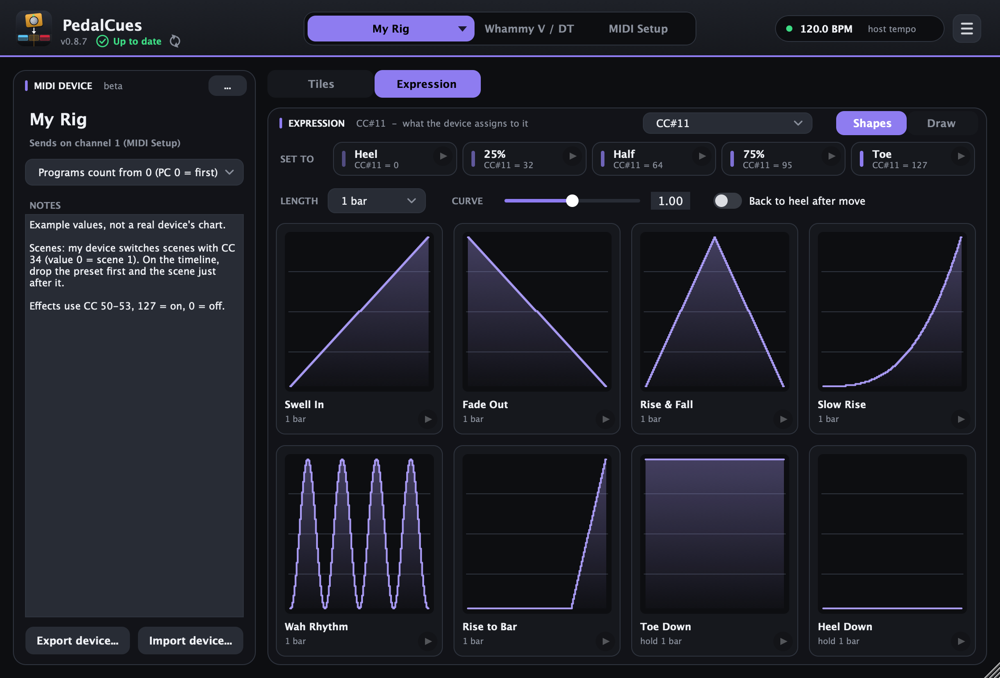
Switch the right side from Tiles to Expression for pedal moves on your device: the same swells, fades, rise & fall, wah rhythm and drawn moves as on the Quad Cortex page, plus Set to tiles (heel, 25%, half, 75%, toe). They're tempo-synced Control Change curves, so they work with anything that takes a CC.
- Pick the CC in the box at the top: the one your device's expression pedal listens to, or the one you assigned to a parameter on the device (its manual says how; on many units it's an "assign" with a MIDI CC as the source). CC#11 is the MIDI standard Expression controller and the default. The CC is saved with the device, so it travels when you share it.
- Length, curve and Back to heel after move work as on the other pages, and Draw saves your own moves to My drawings, shared by every page.
The tile editor
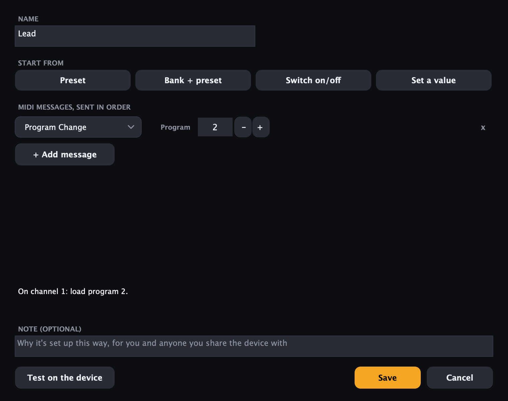
+ Tile or a double-click opens the editor:
- Start from fills in a typical tile to adjust: Preset (one Program Change), Bank + preset (bank select, then the Program Change, for devices with more than 128 presets), Switch on/off (one Control Change, 127 = on, 0 = off) and Set a value (one Control Change with the value from the device's chart).
- MIDI messages: one row per message, sent together in order. Pick Program Change, Control Change or Bank select (CC#0), then set the numbers with − / + (or drag them). Control Changes have On (127) and Off (0) buttons. × removes a row; + Add message adds one.
- The line under the messages says in plain words what the tile sends, for example "On channel 1: select bank 1, then load program 5."
- Note (optional) shows in the tile's tooltip.
- Test on the device sends the messages before you save.
A preset, then a scene: drop the preset tile first and the scene tile just after it on the timeline, so the device has loaded the preset before the scene arrives.
Templates (beta)
Some units have no fixed MIDI numbers: you set up the mapping on the unit, so the numbers differ from player to player. For those, PedalCues has templates: pick one in the device list (marked template) and you get an ordinary MIDI device filled with tiles from the manual, plus About this unit with what to set on the unit. Adjust the tiles to your numbers, add your own, and share it.
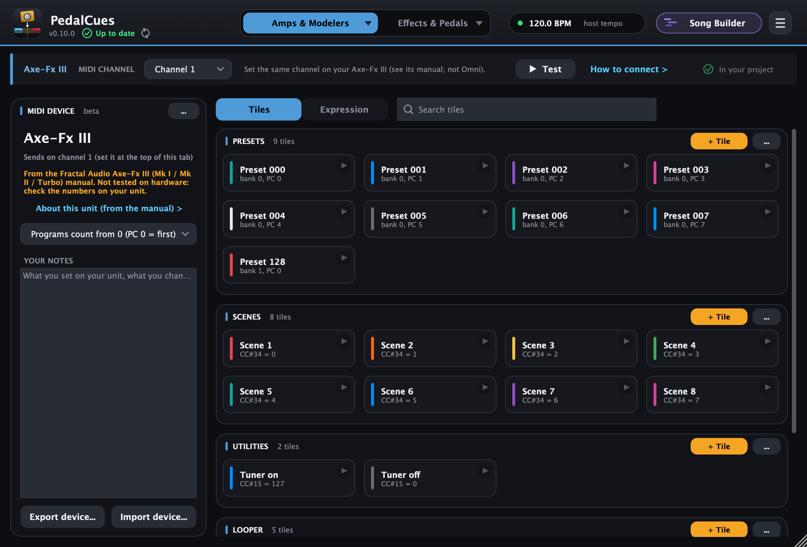
These four Fractal units have no default MIDI CCs: you assign scene select, tuner and the rest on the unit (SETUP > MIDI/Remote), so the numbers differ from player to player. That's why they come as editable MIDI devices rather than a page like the Axe-Fx II. Pick one from the device list and it arrives filled with tiles from its manual: presets (CC#0 bank + Program Change, ready to use) and scenes, tuner and looper with suggested numbers (the Axe-Fx II's old defaults: Scene Select 34, Tuner 15, looper 28-32). Set the same numbers on the unit, or change the tiles to yours.
- FM3: it can't be controlled over USB MIDI (Fractal: "unpredictable behavior"). Use a 5-pin MIDI cable.
- VP4: 104 presets (A1-Z4), 4 scenes (the tiles use CC#17, the manual's example). MIDI is on 3.5 mm TRS jacks: you need a Type A adapter.
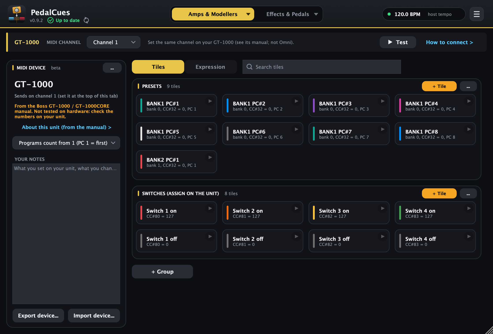
Boss GT-1000 / GT-1000CORE: it has no fixed MIDI CCs either: it reacts to a CC only through an ASSIGN that uses it as its source (CC#1-31 or CC#64-95), and which patch a Program Change loads is set in its PROGRAM MAP. The template is set up for that:
- Presets: on the GT-1000, set MENU > MIDI > MAP SELECT to PROG and fill PROGRAM MAP BANK1 (PC#1, PC#2... = the patches you want). The tiles BANK1 PC#1, PC#2... load those (bank select CC#0 and CC#32 = 0, then the Program Change, counted from 1 like the GT-1000). Rename them after your patches.
- Expression: switch the device to Expression; it starts on CC#11. On the GT-1000, make an ASSIGN with SOURCE = CC#11 and the TARGET you want to move (foot volume, a wah, a delay level...), ACT LOW 0, ACT HIGH 127.
- Switches: Switch 1-4 on / off send CC#80-83 = 127 / 0. Make an ASSIGN for each with SOURCE = that CC, MODE = MOMENT, and the target (an effect's on/off).
- Set RX CHANNEL (MENU > MIDI > MIDI SETTING) to the channel at the top of the device's PedalCues page.
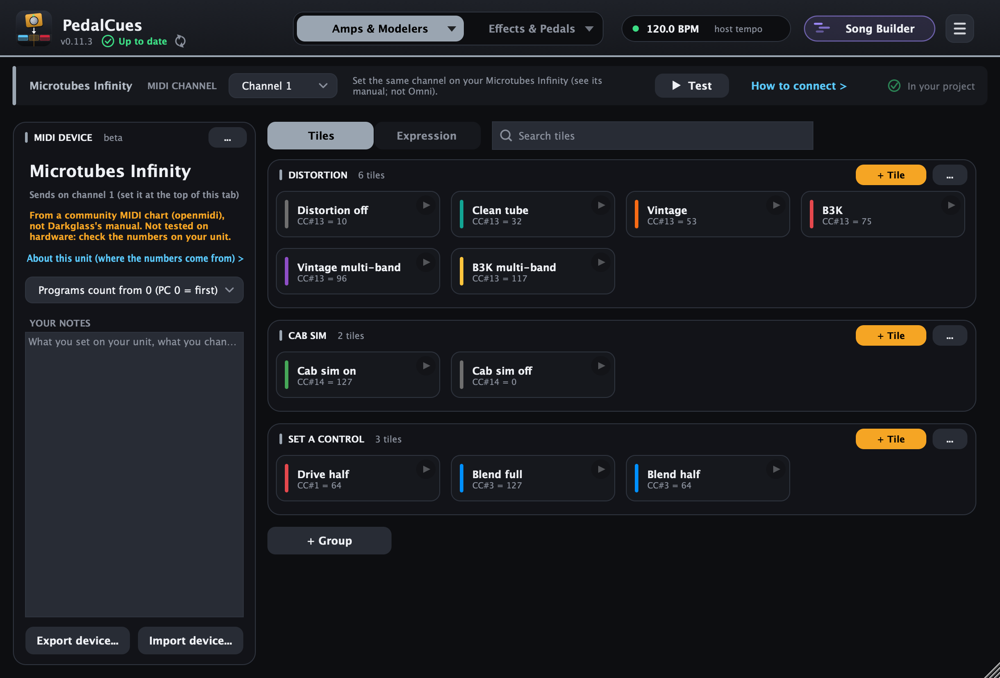
Darkglass Microtubes Infinity: Darkglass doesn't publish its MIDI chart, so this template comes from a community chart (Morningstar's openmidi database), and the card says so. It has no preset tiles, because no Program Changes are documented.
- Tiles: distortion mode (CC#13: off, clean tube, Vintage, B3K and the multi-band versions), cab sim on / off (CC#14, assumed 0 = off, 127 = on), and a few set-value tiles. About this unit lists every control: Compression CC#0, Drive 1, Character 2, Blend 3, Level 4, headphones 5, EQ sliders 6-11, compression ratio 12.
- Expression starts on Drive (CC#1); pick any other control there for moves.
- Its MIDI jack is TRS Type B, unlike the Type A on most gear: use a Type B cable or adapter (or a controller that switches to Type B). USB MIDI works too.
- CC#0 is a control here (Compression), not bank select, so PedalCues never adds a spare CC#0 to this device's clips.
- The device card says in amber that the numbers come from the manual, not tested on hardware. About this unit (from the manual) shows what to set and check; it's kept by PedalCues (updates keep it current), while Your notes below it are yours to write.
Custom MIDI devices are a beta: tell us what your device needs, or share a device file, in a GitHub issue.
9. Build a song, step by step
This example covers a song with a clean verse, a crunchy chorus and a Whammy solo.
- Load the preset at bar 1. Click Clean Rig in the list, then drag the Loaded preset screen to bar 1.
- Set the intro scene. With Load 1A first on (the default), dragging the Intro scene tile to bar 1 loads the preset and the scene in one clip. With it off, drag the preset first, then the scene just after it.
- Mark every section. Drag Verse to bar 3, Chorus to bar 9, Solo to bar 13, and so on. Each clip is named after the scene, so the arrangement reads like a setlist.
- Whammy mode for the solo. On the Whammy tab, drag Oct Up to one beat before the solo.
- Treadle move. Set Length to
2 bars, then drag Rise & Fall to the bar where the bend starts. Optional: for a delay that swells into the last chorus, assign the delay's mix to Expression 1 on the QC, then drag Swell In (Quad Cortex page > Expression) a few bars before it. - Test. Press play in your DAW and watch the QC and the Whammy follow. To check a single cue, click its tile's play button.
- Tuner between songs. Drop Tuner On at the end of the song and Tuner Off before the next one.
Clips are ordinary MIDI items. You can move, copy, split or delete them like any other item. Their names come from your tiles, so renaming a scene before you drag it keeps the timeline readable.
10. Effects & Pedals: Whammy, Strymon, Line 6, Boss, Meris, Chase Bliss and more
The first tab, Amps & Modellers, is for your amp modeller; the second, Effects & Pedals, for an effect or pedal. It shows the DigiTech Whammy V until you pick another device: click the ▾ on the tab (or the tab itself again):

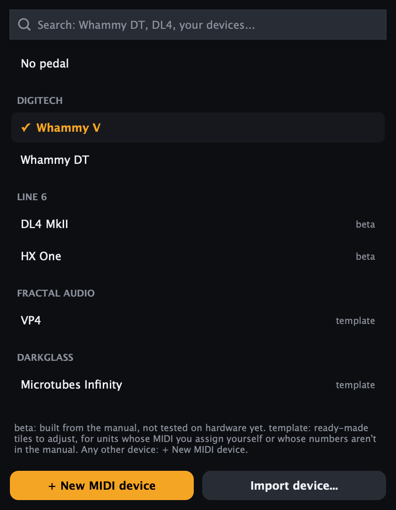

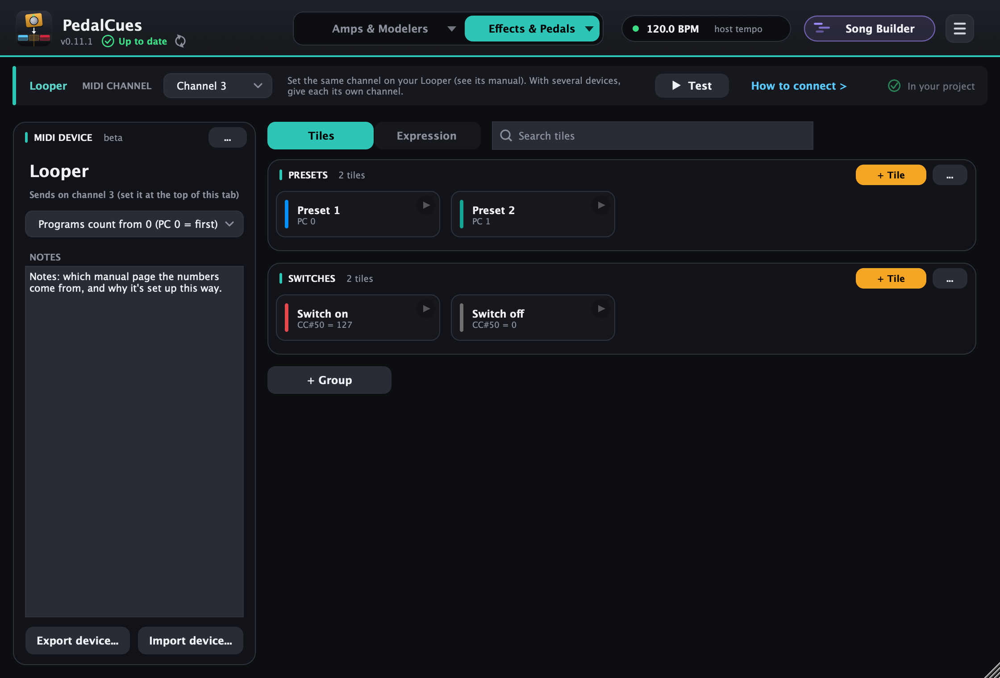
- Whammy V and Whammy DT (DigiTech): two devices sharing one page, described below. The DT adds Drop Tune and has no Chords.
- Line 6 DL4 MkII and HX One (beta): ready-made pages, below.
- Strymon, Boss, Meris, Chase Bliss, Walrus, Source Audio and EHX (beta): ready-made pages, below.
- Templates for effect pedals: the Fractal VP4, the Darkglass Microtubes Infinity, the Eventide H9 / H90 and the Boss RC-500 / RC-600 (templates). Templates for amp modellers stay in the Amps & Modellers list.
- Your MIDI devices: any custom MIDI device (a delay, a looper, a synth...), with its tiles and expression moves, or + New MIDI device / Import device... under the list. A device belongs to one tab: to move it, use Move to Amps & Modellers (or Move to Effects & Pedals) in the device's ... menu.
- The tab takes the pedal's name and colour. Each pedal keeps its own MIDI channel, set at the top of its page and saved with your setup.
Switching pedals doesn't change clips already on the timeline: each keeps the pedal and channel it was dragged with.
Line 6 DL4 MkII and HX One (beta)


Laid out like the Fractal and Line 6 pages, built from Line 6's owner's manuals and not tested on hardware yet (About this unit lists every number):
- DL4 MkII: presets A-F (Program Change 0-5) and 7-128 (PC 6-127, only reachable over MIDI). Controls: the delay's note value (CC#12), preset on / bypass, tap, Classic Looper mode on / off and the reverb-delay routing. Looper: record, overdub, play, stop, play once, undo, redo, reverse, half speed (CC#60-66). Expression: the expression pedal (CC#3; make the assignment first with a pedal on the EXP PEDAL jack) and the knobs (time, repeats, tweak, tweez, mix, reverb decay, predelay and mix). Models: the 15 MkII and 15 Legacy delays (CC#1) and the 15 secret reverbs plus Reverb off (CC#2) of the loaded preset. Changing a model clears the preset's pedal assignments, as on the pedal.
- HX One: presets 000-127 (PC 0-127). Switches: ON (toggles) and FLUX; Engage / Bypass, tap (CC#93, as in the manual's table), Home, Preset List and Tuner. Looper (Simple Looper models) and Expression on the pedal (CC#3, with Pedal Jack set to ExpFS4), parameters 1-24 and the FLUX times.
- Both use MIDI channel 1 out of the box, the same as most amp modellers: set the pedal to another channel (PedalCues suggests 3) and pick the same at the top of its page. The DL4 MkII's MIDI Thru is off out of the box; turn it on in its Global Settings if another device is after it.
Strymon, Boss, Meris, Chase Bliss, Walrus, Source Audio and EHX (beta)


Ready-made pages from each maker's MIDI chart, on the Effects & Pedals tab (pick them with the ▾). Like the Whammy, each has a faceplate in the pedal's own colour, with the loaded preset in its display (drag it onto the timeline to load the preset). They're built from the manuals and not tested on hardware yet; About this unit on each page lists every number, what each tile sends and what the manual doesn't say.
- Strymon: TimeLine, BigSky, Mobius (presets 00A-99B / 00A-99C), TimeLine MX and BigSky MX (000A-149B), Volante, Sunset, Riverside, Compadre, Iridium, cloudburst, Flint V2, El Capistan V2, Deco V2, DIG V2, Lex V2, blueSky V2, Brig, Olivera, Ultraviolet and Zelzah (presets 0-299). Every preset clip sends its bank (CC#0) and Program Change. The small pedals' fixed programs show their meaning: Manual mode (PC 127), Favorite and the MultiSwitch presets. Controls: bypass, tap, on/off for each effect side, infinite / hold; Looper on the TimeLine (MX); Expression on CC#100 and the knobs (on the Compadre, which has no expression CC, the view is called Knobs); Models with the type tiles (TimeLine MX delay types and dual mode). On the TimeLine, BigSky, Mobius and BigSky MX, the type knob's tiles are numbered Type 0-11: Strymon's manuals give the numbers but not which one is which machine, and an amber line in the group says so. Try them on your pedal (and tell us the order you find).
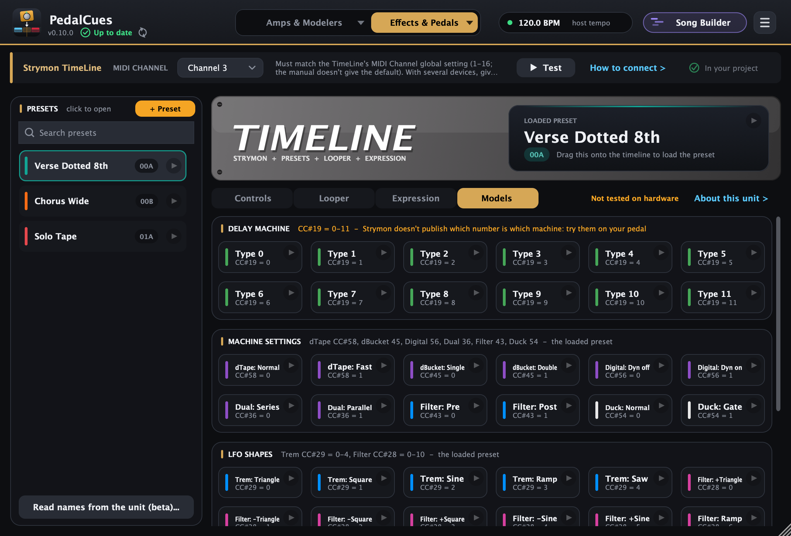
- Boss DD-500, RV-500, MD-500: patches 01A-99C, effect on / bypass, the DD-500's phrase loop, and the knobs as expression moves. The CC numbers are the ones in Boss's tables: if you changed them in the pedal's MIDI menu, use a custom device. If a preset tile loads another patch, check the pedal's PC MAP.
- Meris: Mercury7, Ottobit Jr., Polymoon, Enzo, Hedra (16 presets; PC 0 = bypass), and the X series LVX, MercuryX, Enzo X, Ottobit X (with their block types under Models).
- Chase Bliss: MOOD MKII, Blooper, Dark World, Thermae, Habit, CXM 1978, Preamp MKII, Generation Loss MKII, Lossy, Brothers AM, Onward, Clean. Live (PC 0) returns to the knobs. The Blooper's programs are loops, so its list says Loops (Loop 1-16, PC 0-15). PedalCues never sends their factory-reset or save commands.
- Walrus Audio MAKO D1, R1, M1, ACS1 (MKII; the MKI pedals use different numbers), Source Audio Nemesis, Ventris, Collider, and EHX POG3, Oceans Abyss. The MAKO pedals and the Nemesis have no expression CC in their charts, so their third view is Knobs: each tile turns one knob or parameter over its own range.
- Templates (you assign the CCs on the pedal): Eventide H9 and H90, Boss RC-500 and RC-600 loopers. Their preset tiles work right away.
- Footswitch tiles press and release the pedal's footswitch (down, then up 1/16 later), like your foot. Expression lists every knob and parameter; parameters with a small range (Boost 0-60, Smear 0-18...) move only over their own range. Settings that belong to one machine or reverb type say so ("dTape: ...") and only act when that type is loaded. Views scroll when there are more tiles than fit.
- Set each pedal's MIDI channel on the pedal and at the top of its page. Several of these take MIDI on a TRS jack (the EXP jack on Meris and some Strymon pedals, a MIDIBox for Chase Bliss): About this unit says which cable.
Switching pedals doesn't change clips already on the timeline: each keeps the pedal and channel it was dragged with.
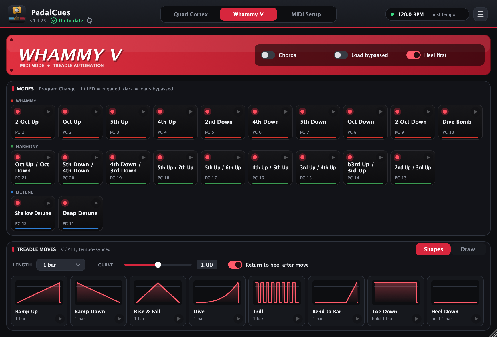
PedalCues works with the DigiTech Whammy V (5th generation) and the Whammy DT. Pick Whammy V or Whammy DT in the tab's list (the ▾). The red faceplate then shows the pedal's name, and on the DT the Drop Tune tiles appear. Your choice is saved with your setup (Save as default setup, Export setup).
Modes
The 21 Whammy modes are laid out like the pedal's panel (the Whammy DT has the same modes on its left knob):
- Top row: the Whammy modes, from 2 Oct Up to Dive Bomb.
- Middle row: each Harmony mode sits right below the Whammy mode that shares its row on the pedal (Oct Up/Oct Down below 2 Oct Up, and so on).
- Bottom row: Detune Shallow and Deep, on their own row as at the bottom of the pedal.
Colours match the pedal: Whammy (red), Harmony (green), Detune (blue). Each tile shows its Program Change number from the DigiTech manual. Drag a mode tile to switch the Whammy.
- ... (Modes header): Program numbering. Leave it on As printed in the manual (1 = first); switch to Zero-based only if every mode lands one position off on your Whammy.
- Chords (Whammy V only): uses the polyphonic Chords program range (43-84) instead of Classic (1-42). The Whammy DT has no Chords mode, and on the DT those numbers select Drop Tune, so the switch is hidden there.
- Load bypassed: selects the mode without engaging the effect. The tile LEDs go dark to show this.
- Heel first: sends
CC#11 = 0before switching, so the new mode starts from heel with no pitch jump.
Whammy DT: Drop Tune
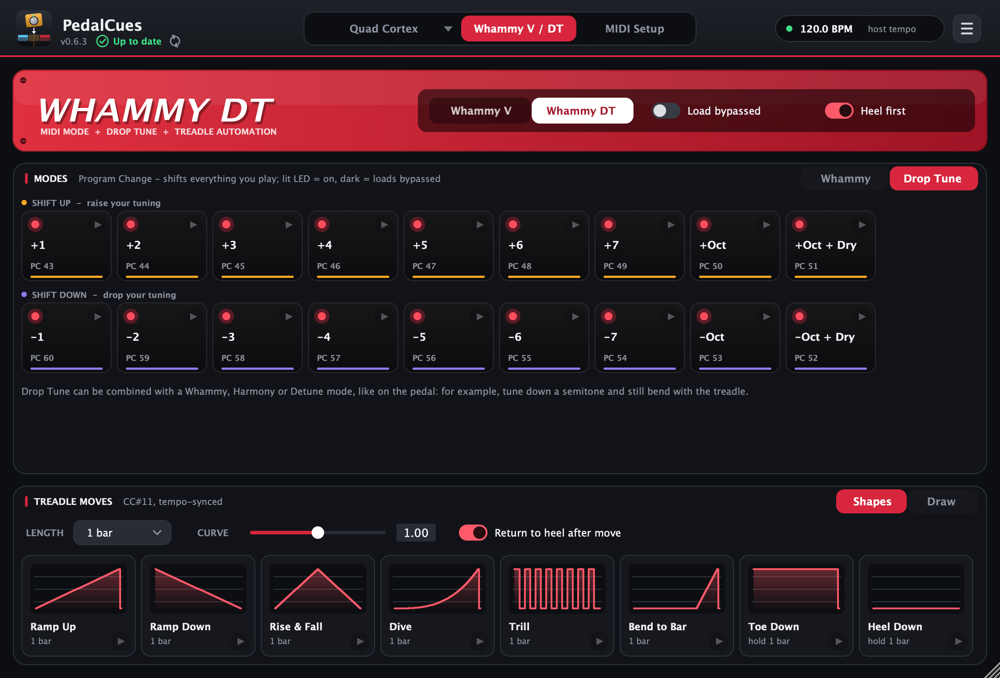
On the Whammy DT, the Modes card has a Whammy | Drop Tune switch. Drop Tune shows the pedal's right knob as two rows of tiles:
- Shift Up (raise your tuning): +1 to +7 semitones, +Oct, and +Oct + Dry (an octave up mixed with your dry signal, a 12-string sound).
- Shift Down (drop your tuning): -1 to -7 semitones, -Oct and -Oct + Dry. For example, -1 gives E-flat tuning and -2 a whole step down.
Drop one where the new tuning starts, for example -2 at the start of a song in D standard. With Load bypassed on, a tile picks the shift but leaves it off (its LED goes dark), ready to switch on later. Drop Tune can be combined with a Whammy, Harmony or Detune mode, like on the pedal, so you can tune down and still bend with the treadle.
| Drop Tune | 1 | 2 | 3 | 4 | 5 | 6 | 7 | Oct | Oct + Dry |
|---|---|---|---|---|---|---|---|---|---|
| Shift Up, on | 43 | 44 | 45 | 46 | 47 | 48 | 49 | 50 | 51 |
| Shift Up, bypassed | 61 | 62 | 63 | 64 | 65 | 66 | 67 | 68 | 69 |
| Shift Down, on | 60 | 59 | 58 | 57 | 56 | 55 | 54 | 53 | 52 |
| Shift Down, bypassed | 78 | 77 | 76 | 75 | 74 | 73 | 72 | 71 | 70 |
These are the Program Change numbers from the Whammy DT manual. The DT's Momentary footswitch has no MIDI message, so it can't be sent from a clip; drop a shift tile where it should start and the same tile with Load bypassed where it should stop.
Treadle moves
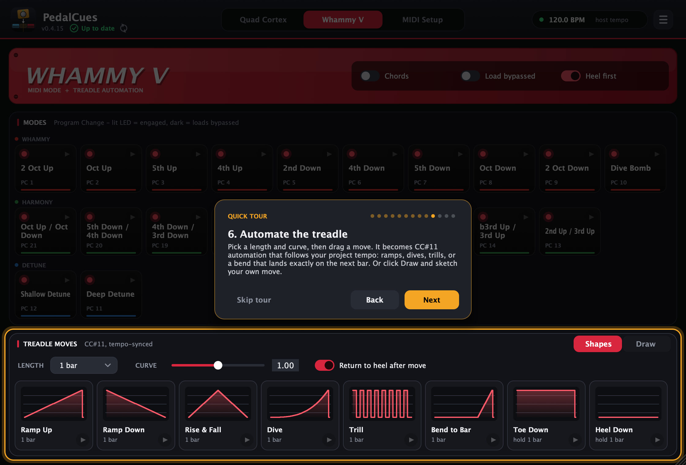
Treadle moves are CC#11 automation written in beats, so they follow your project tempo. Each tile shows its curve. You can also draw your own.
| Move | What it does |
|---|---|
| Ramp Up / Ramp Down | Heel to toe, or toe to heel, over the length |
| Rise & Fall | Heel to toe and back |
| Dive | Slow start, then accelerates to toe (try it with Dive Bomb) |
| Trill | Toggles heel/toe on 1/16 notes |
| Bend to Bar | Holds heel, then bends in the last beat so it lands on the next bar line |
| Toe Down / Heel Down | Jumps and holds |
- Length: from 1/16 note up to 4 bars.
- Curve:
1.00is linear, lower values start fast, higher values start slow. - Return to heel after move: adds a
CC#11 = 0at the end.
Draw your own move
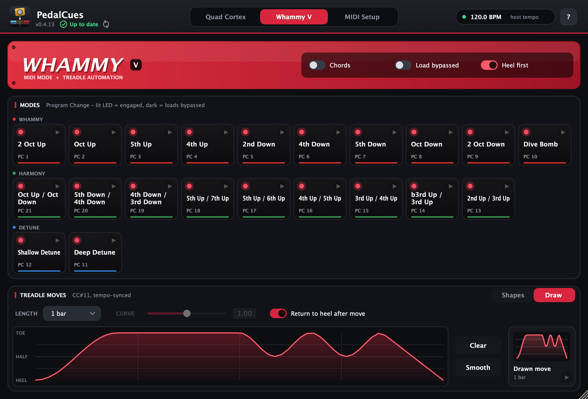
When no ready-made shape fits, click Draw in the Treadle moves header.
- Pick the length first. The pad's grid shows beats, with brighter lines on each bar.
- Drag across the pad to draw the treadle: bottom is heel, top is toe. Draw over any part again to fix it. Hold Shift to snap to heel, quarter, half, three-quarter or toe.
- Clear resets the pad to heel. Smooth rounds off sharp edges; click it again for a softer curve.
- Drag the Drawn move tile onto the timeline where the move should start, or click its play button to try it on the pedal.
The drawing stretches to whatever Length you pick. Return to heel after move works here too; Curve only applies to the shapes, so in Draw mode its place holds Wave.... Click Shapes to go back to the ready-made moves.
Wave...: generate a wobble, a trill or a build-up


Wave... (in Draw mode, next to Length) writes a wave into the pad as you set it, like the CC LFO in Reaper's MIDI editor:
- Type: Sine, Triangle, Square, Saw up or Saw down.
- Waves: how many across the move (½ to 8). The move follows Length, so 4 waves over 1 bar is a steady quarter-note wobble.
- Phase: where the wave starts: 0° at its low point, 180° at its high point.
- Shape: tilts each wave: a triangle leans towards a saw, a sine rises fast and falls slowly (or the other way round), a square gets a shorter or longer high part.
- Low / High: the range the wave moves in (0 % = heel, 100 % = toe), for example a gentle wah between 30 % and 70 %.
- Grow: above 0 the waves build up from Low to full across the move; below 0 they die away (Reaper's amp skew).
- Speed: above 0 the waves speed up across the move; below 0 they slow down (Reaper's frequency skew).
Each change replaces the drawing. Fix it by hand afterwards, Smooth it, or Save it in My drawings. Wave... is in every Draw mode: the Whammy treadle, the Quad Cortex and Kemper expression, the Fractal, Line 6 and HeadRush pedals, and custom devices.
Import MIDI...: reuse a move you made in your DAW
Drew a treadle bend or an expression swell as CC automation in your DAW and want it again in other songs? Export (or drag) the clip as a .mid file, then click Import MIDI... in Draw mode (or drop the file on the card):
- PedalCues reads the card's own CC (CC#11 for the Whammy, the expression CC elsewhere); if the file has another CC, the one it uses most (never bank select), or else pitch bend.
- The move keeps its timing: it starts where the clip starts, and Length becomes the shortest length that holds it (up to 8 bars), with the last value held to the end. Longer clips keep their first 8 bars.
- It then asks for a name to save it in My drawings (the file's name is suggested), so you can drag it into any song, as often as you like.
It's in every Draw mode, like Wave....
My drawings: save and reuse your moves
Keep the moves you like and use them again in any song:
- Save keeps the drawing on the pad under a name, for example Big Bend. The tile and the clips you drag take that name (
Whammy Big Bend 1 bar). - My drawings (the list above Save) loads a saved drawing onto the pad, ready to drag or to edit. Pick New drawing to start from a clear pad.
- Edit a loaded drawing by drawing over it, or with Clear and Smooth. The tile shows edited until you click Save again, which updates that saved drawing.
- … has Save as new drawing (keep the original and save a copy), Rename and Delete.
My drawings are saved on your computer, not in one project, so every project, every PedalCues track and the standalone app see the same list, and updates keep them. The same list appears in the Quad Cortex page's Expression Draw mode, so a drawing works as a treadle move and as an expression move. Clips you've already dragged onto the timeline never change when you edit or delete a drawing. To take them to another computer, use Export setup (it includes My drawings) and Import setup there, which adds them to that computer's list.
11. MIDI channels, How to connect and your setup
The strip at the top of each page (set once, required):
- MIDI channel: the channel the device on this tab listens on. Set the same on the device itself (the hint next to it says where) and give each device a different one. Every device keeps its own channel: the Quad Cortex, a Kemper, each Fractal / Line 6 / HeadRush / Darkglass page, each custom device, the Whammy V and the Whammy DT. Every cue is sent on it, and each clip keeps the channel it was dragged with, so set it before building songs. Until you click Done, the strip reminds you in amber.
- Test: sends a quick check to the device on its channel and says what it sent: the amp modeller opens and closes its tuner (CC#45 on the QC, CC#31 on the Kemper; preset 1 or a tap on units without a tuner over MIDI), a custom MIDI device sends your first tile, the DL4 MkII and HX One load their first preset, and the Whammy steps through Oct Up, 5th Up and 2 Oct Up half a second apart. In your DAW it goes out of this track's MIDI output; in the standalone app, to the port picked in How to connect.
- How to connect > opens the Connect your rig window (also ☰ > How to connect, Help > How to Connect in the standalone app).

Connect your rig:
- Test your devices (standalone app only): the MIDI port the app sends to (a port you plug in appears by itself) and Test all, which tests both devices at once.
- Set up your DAW: with two devices, pick how they're connected: Each device on its own output (the simplest) or One cable through the amp modeller (a daisy chain through its MIDI Thru; only offered when it has one). The daisy chain needs a MIDI cable into the amp modeller, not USB: an amber note says what your unit does with USB MIDI (the QC and Kemper never pass it on to their Thru; some units do only with a setting, named there; a few always do). With one device there's nothing to choose. The steps make one cue track per device (add more the same way), with your devices as examples. Pick Your DAW (Reaper, Ableton Live, Cubase / Nuendo, Logic Pro or Other) to see where that DAW sets a track's MIDI output. Wiring guide: cables and diagrams opens the wiring guide: one device, a daisy chain or separate outputs, with the cables and signal flow for each and the setup that doesn't work.
Your setup: save, share, start new projects with it
Your setup is your preset, scene, footswitch and Whammy names and colours, every device's MIDI channel and the other MIDI settings, and your playing preferences: the Whammy's Chords, Load bypassed and Heel first, Return to heel / Back to heel after move, and Expression's Load 1A first; your amp modeller or MIDI device, your custom MIDI devices, and the Kemper's Load P1 first, Keep tails and Back to heel after move. It's stored inside each DAW project automatically. (Length and Curve change from song to song, so they stay in each project.) From the ☰ menu (the File menu in the standalone app):
- Save as default setup: new PedalCues instances start with it.
- Load default setup: brings it back into this project.
- Export setup / Import setup: a file to back up, move to another computer, or share with your band. It also carries your wiring choice (Daisy chain or Separate outputs) and your saved drawings; importing adds the drawings to your list and never removes any.
Settings that belong to one computer stay there and aren't exported: the standalone app's MIDI port and tempo (port names differ between computers), Check for updates automatically, whether you've seen the quick tour, and whether you've confirmed your MIDI channels.
Updates
Under the title, PedalCues shows your version and whether it's Up to date. When a newer release is out, it says Update to vX.Y.Z: click it to see what's new and download it: the installer on macOS and Windows (quit your DAW, run it, and it replaces the old version), the zip with install.sh on Linux. It says Couldn't check when you're offline. The round arrows next to it check again.
PedalCues asks GitHub for the latest release when it opens; nothing else is sent. To turn that off, untick Check for updates automatically in the ☰ menu (in the standalone app: the PedalCues menu on macOS, Help on Windows). See what changed in each version on the What's new page (☰ > What's new in the plugin, Help > What's New in the standalone app).
The standalone app
- Menus: File saves, loads, exports and imports your setup; Options > MIDI Output picks the port; Help has the quick tour, the user guide, the wiring guide, What's New, Report a Problem and support. On macOS, About and Check for Updates are in the PedalCues menu.
- Tempo: there's no DAW, so click the BPM pill (set tempo) to type, drag or Tap your song's tempo. It only affects how long treadle moves last when you test them.
12. Troubleshooting
| Problem | Fix |
|---|---|
| Nothing happens on the pedal | Check the track's MIDI output (Reaper: MIDI Hardware Output) and that the pedal's MIDI port is enabled in your DAW's MIDI preferences. Try a tile's play button. |
| Sync from QC: "the loaded preset has unsaved changes" | Reading every preset loads each one, which would lose those edits. Save (or discard) them on the QC, then sync again. Or untick "every ticked preset" to import names and the loaded preset only. |
| Sync from QC: "No Quad Cortex found" or "Couldn't open" | Connect the QC's USB port (not just MIDI) and switch it on. Quit Cortex Control, which keeps the USB connection to itself. Wait until the QC has fully started, then try again. On Linux, install the USB permission rule from Install once. |
| Standalone app: tiles do nothing | Pick the port your devices are on in How to connect (or Options > MIDI Output), then try Test at the top of the page. On Windows, close your DAW first; only one program can use a MIDI port at a time. |
| Scene or stomp changes the wrong preset | Load 1A first is off, so tiles act on whatever preset the QC has loaded. Switch it on in the Scenes header so they load their own preset first. |
| A stomp tile changes scenes | The QC is in Scene mode, where footswitch A-H select scenes. Put the QC in Stomp mode (or drop the Stomp Mode tile before your stomp cues). Before v0.4.2 the Scene Mode and Stomp Mode tiles were swapped; drag those clips in again. |
| The QC stays in another setlist | Turn on Switch to the preset's setlist (under the preset list, or the Setlists not sent: turn on button above Sync from QC), check the preset's setlist number in Edit preset, then drag its clips into your DAW again: clips keep what they were dragged with. |
| Wrong preset loads | Check setlist, bank and slot in Edit preset. If presets are in other setlists, turn on Switch to the preset's setlist under the preset list. Setlist numbers are as the QC shows them (Factory Presets = 0). Before v0.4.28 PedalCues sent one less, so if you added 1 to work around it, set them back. |
| The scene changes a little after the beat | That's the 1/16 gap of Load 1A first, which gives the QC time to load the preset. Drop the tile 1/16 early, or switch Load 1A first off inside the song. See Timing. |
| Whammy doesn't react | If the QC is on USB and the Whammy hangs off the QC's Thru, that can't work: the QC doesn't forward USB MIDI (a known QC limitation). Use one of the three working setups. Otherwise check the cable direction (MIDI Out to MIDI In) and the channels, set the QC to a fixed channel (not Omni), and for the daisy chain turn on QC MIDI Thru. |
| My amp changes preset or slot when a Whammy cue plays | The amp modeller is on Omni, so it also hears the Whammy's Program Changes. Set it to a fixed channel, different from the Whammy's, and the same number at the top of its page. |
| I changed a channel, but old clips still use the old one | Clips keep the channel they were dragged with. Drag those tiles in again (or change the clips' channel in your DAW). |
| Kemper doesn't react | Set the Kemper to a fixed MIDI channel (not Omni) and the same number at the top of the Kemper page. Put Kemper clips on the Kemper Cues track. Check that Amp modeller is set to your Kemper model. |
| Kemper loads the wrong slot | Check the performance number in Edit performance. Load P1 first off loads that slot of the performance the Kemper already has; switch it on to load the performance too. |
| Whammy doesn't react (Kemper on USB) | Like the QC, the Kemper doesn't pass USB MIDI on to its MIDI Thru. Give the Whammy its own MIDI output, or send to the Kemper's 5-pin MIDI In. See Connect your rig. |
| An Axe-Fx III, FM9, FM3 or VP4 scene or tuner tile does nothing | These units have no default MIDI CCs. Assign the numbers from the device's Notes in SETUP > MIDI/Remote, or change the tiles to yours. On an FM3, use a 5-pin MIDI cable: it can't be controlled over USB. |
| A Helix / Fractal page tile does nothing | Check the unit's MIDI channel (About this unit says where) against the channel at the top of its page, and that the cue track sends to the unit. On a Fractal page, the CCs are the factory defaults: if you changed them on the unit, use a custom MIDI device. |
| A Helix preset loads from the wrong setlist | Turn on Switch to the preset's setlist under the preset list, check the preset's setlist, then drag its clips in again. |
| A custom device tile does nothing | Check the device's MIDI channel (the same at the top of its page and on the device) and its MIDI chart: CC numbers and values differ for every device. Try Test on the device in the tile editor. |
| A custom device loads the preset next to the one I wanted | Its manual counts presets from the other number: switch Programs count from 0 / 1 on the device card. |
| Expression tiles do nothing | Assign the parameter to Expression 1 (or 2) on the QC, in that preset, and pick the same Exp 1 / Exp 2 in PedalCues. The clips must be on the QC Cues track, on the QC's channel. |
| Expression moves the wrong thing | It acts on the preset the QC has loaded. Put the move after the right preset or scene clip, or switch on Load 1A first in Expression. |
| Whammy clips do nothing | Whammy clips must be on the Whammy Cues track, whose output leads to the Whammy. |
| How do I update? | When the header says Update available, click it and choose Download. Close your DAW, then open the installer on macOS, or replace the plugin files the same way you installed them on Windows and Linux. Your setup and projects are kept. |
| Drop Tune tiles are missing | Pick Whammy DT (not Whammy V) with the ▾ on the Effects & Pedals tab, then click Drop Tune in the Modes header. |
| A Whammy DT mode tile changed my tuning | The page is set to Whammy V with Chords on: on the DT those program numbers are Drop Tune. Switch the page to Whammy DT. |
| Whammy mode is one off | On the Whammy page, click ... in the Modes header and choose Zero-based (0 = first). |
| Clip lands between bars | Turn on snap to grid in your DAW before dropping. |
| macOS says PedalCues "is damaged and can't be opened" | It isn't damaged; macOS blocks apps downloaded from the internet that Apple hasn't notarised. Use the installer (PedalCues-macOS.pkg), or run xattr -cr /Applications/PedalCues.app in Terminal. See Install. |
| macOS won't open the installer ("can't be verified") | Click Done, then System Settings > Privacy & Security > Open Anyway, within a few minutes. See Install. |
| My DAW lists PedalCues twice (macOS) | You have an old zip install in your user folder too. Delete ~/Library/Audio/Plug-Ins/VST3/PedalCues.vst3 and ~/Library/Audio/Plug-Ins/Components/PedalCues.component, then re-scan. |
Still stuck, found a bug or have an idea? Use ☰ > Report a problem in the plugin (Help > Report a Problem in the standalone app). It opens a short form on GitHub with your PedalCues version and computer already filled in (you need a free GitHub account). You can also start from the Help page, or suggest an idea.
Enjoying PedalCues? It's free; if you'd like to support it, you can donate via Buy Me a Coffee, PayPal or Revolut, or sponsor it on GitHub Sponsors, or from ☰ > Support PedalCues in the plugin. Completely optional.
PedalCues is free software by Thanasis Kostopoulos, released under the MIT License. Source: github.com/thankost/pedal-cues. In the plugin, open ☰ > About PedalCues. Not affiliated with any device maker. All product and company names are trademarks of their respective owners.